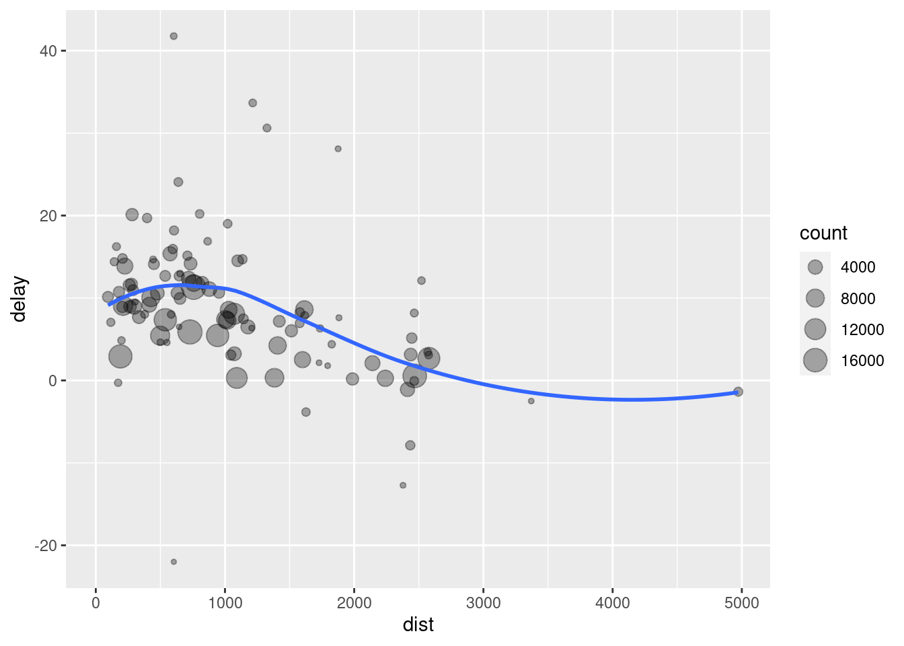
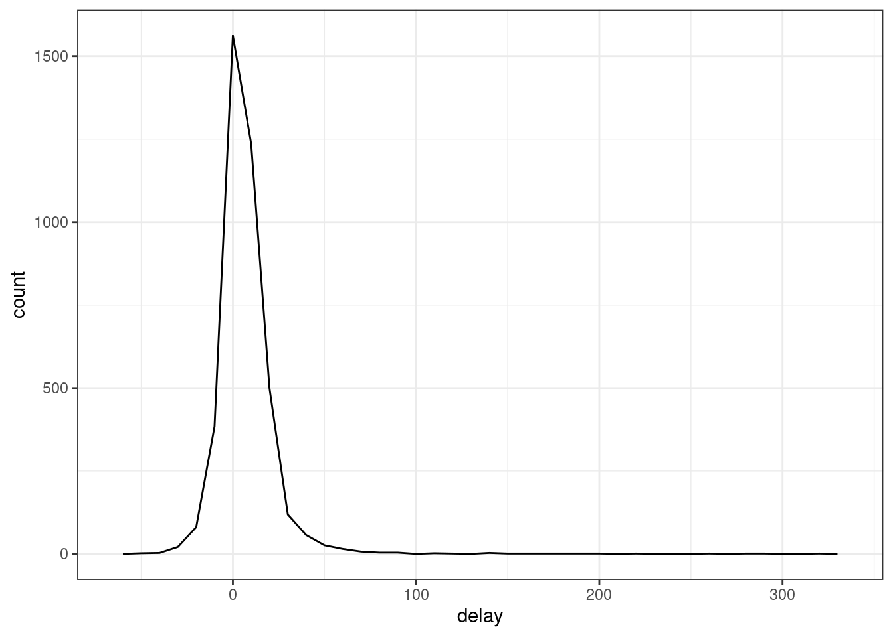
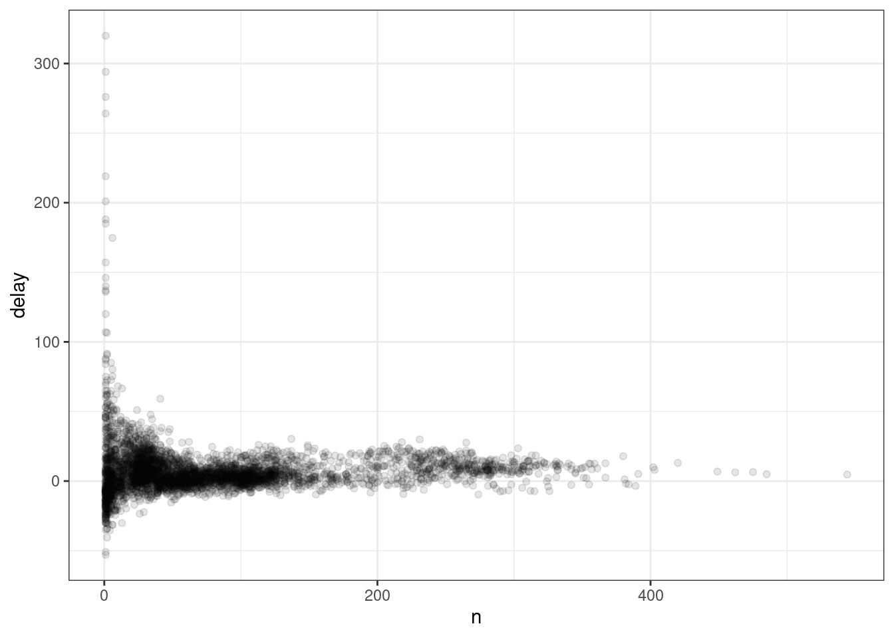
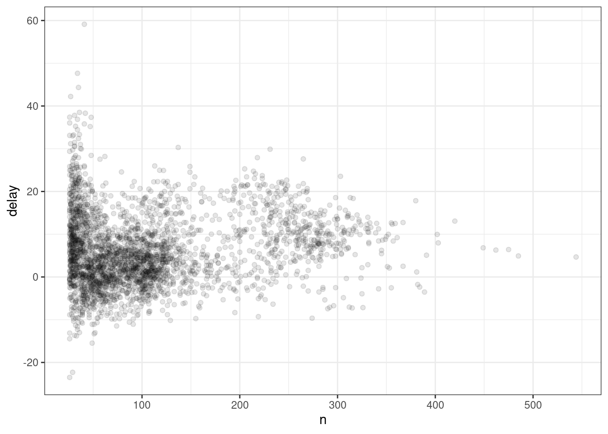
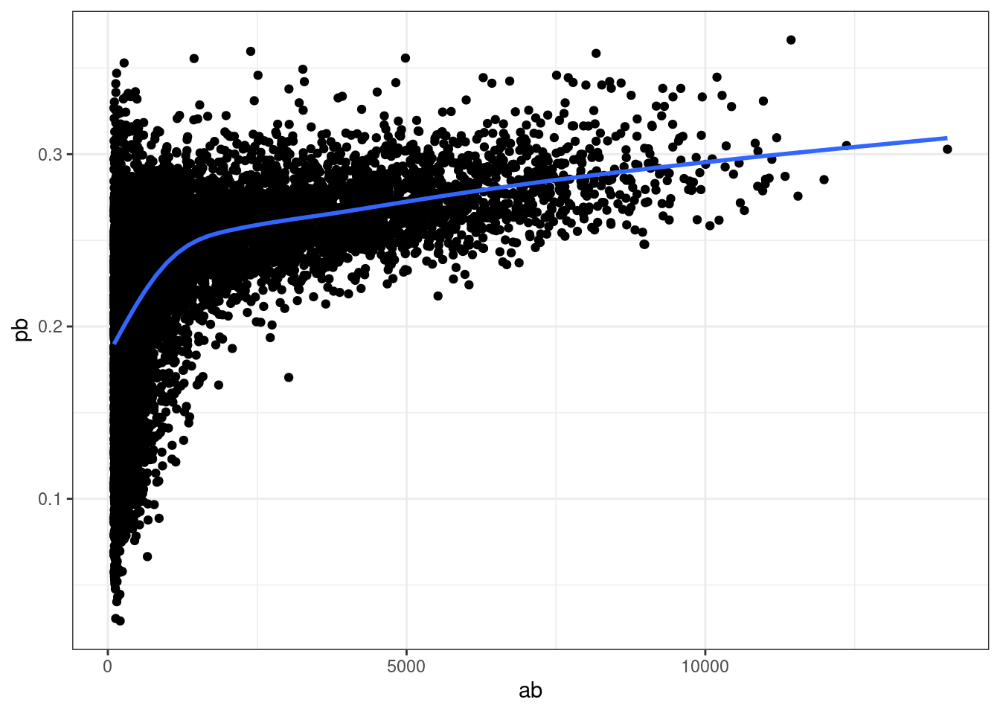

install.packages("tidyverse")Manipulación de datos con tidyverse
La mayoría de los paquetes que aprenderá en este apartado son parte del llamado tidyverse. Los paquetes de tidyverse comparten una filosofía común de programación de datos y R, y están diseñados para trabajar juntos de forma natural.
Puedes instalar tidyverse completo con una sola línea de código:
En su propia computadora, escriba esa línea de código en la consola y luego presione Entrar para ejecutarlo. R descargará los paquetes de CRAN y los instalará en su computadora. Si tiene problemas con la instalación, asegúrese de estar conectado a Internet y de que https://cloud.r-project.org/ no esté bloqueado por su firewall o proxy.
library(tidyverse)── Attaching packages ─────────────────────────────────────── tidyverse 1.3.2 ──
✔ ggplot2 3.4.0 ✔ purrr 1.0.0
✔ tibble 3.1.8 ✔ dplyr 1.0.10
✔ tidyr 1.2.1 ✔ stringr 1.5.0
✔ readr 2.1.3 ✔ forcats 0.5.2
── Conflicts ────────────────────────────────────────── tidyverse_conflicts() ──
✖ dplyr::filter() masks stats::filter()
✖ dplyr::lag() masks stats::lag()Esto le indica que tidyverse está cargando los paquetes ggplot2, tibble, tidyr, readr, purrr y dplyr. Estos consideran los núcleo del tidyverse porque los usará en casi todos los análisis.
Los paquetes del tidyverse cambian con bastante frecuencia. Puede ver si hay actualizaciones disponibles y, opcionalmente, instalarlas, ejecutando tidyverse_update().
Toma nota del mensaje de conflictos que se imprime cuando cargas el tidyverse. Te dice que dplyr sobrescribe algunas funciones en base R. Si desea usar la versión base de estas funciones después de cargar dplyr, deberá usar sus nombres completos: stats::filter() y stats::lag()
Data Transformation con dplyr
La visualización es una herramienta importante para la generación de información, pero es raro que obtenga los datos exactamente en la forma correcta que necesita. A menudo, necesitará crear algunas variables o resúmenes nuevos, o tal vez solo desee cambiar el nombre de las variables o reordenar las observaciones para que sea un poco más fácil trabajar con los datos. Aprenderá a hacer todo eso (¡y más!) en este apartado, que le enseñará cómo transformar sus datos utilizando el paquete dplyr
Para explorar los verbos básicos de manipulación de datos de dplyr, usaremos la base de datos de zonas de amortiguamiento. Este marco de datos contiene. Los datos provienen de la Servicio Nacional de Áreas Naturales Protegidas (SERNANP)# datos será un 'data frame'
z_amortiguamiento<- read.csv(file = 'data/zon_amortiguamiento.csv')
head(z_amortiguamiento) X Codigo Area_natur Periodo Base_legal
1 1 RC04 Ashaninka 2019-2023 R.P. Nº 239-2012-SERNANP
2 2 BP03 de Pui Pui 2019-2023 R.J. Nº 285-2008 INRENA
3 3 RN12 Matsés 2023-2027 R.P. Nº 054-2014-SERNANP-J
4 4 RN10 Allpahuayo Mishana 2022-2026 R.J. Nº 159-2007 INRENA
5 5 RN06 de Salinas y Aguada Blanca 2016-2020 R.J. Nº 087-2007 INRENA
6 6 RN02 de Junín 2008-2012 R.J. Nº 145-2008 INRENA
Fecha_lega Base_leg00 Fecha_le00 Base_leg01 Fecha_le01
1 2012-12-28 <NA> 1899-12-30 R.P. N° 034-2019-SERNANP 2019-01-29
2 2008-10-28 <NA> 1899-12-30 R.P. N° 033-2019-SERNANP 2019-01-29
3 2014-02-27 <NA> 1899-12-30 R.P N° 320-2022-SERNANP 2022-12-29
4 2007-07-24 <NA> 1899-12-30 R.P. N° 082-2022-SERNANP 2022-03-15
5 2007-04-26 <NA> 1899-12-30 R.P. N° 257-2016-SERNANP 2016-09-14
6 2008-06-03 <NA> 1899-12-30 <NA> 1899-12-30
Superficie
1 325684.03
2 45367.20
3 231397.76
4 65956.53
5 310242.10
6 100858.12Dplyr Básico
En este capítulo, aprenderá las cinco funciones clave de dplyr que le permiten resolver la gran mayoría de sus desafíos de manipulación de datos:
- Elija observaciones por sus valores (
filter()). - Reordenar las filas (
arrange()). - Elija las variables por sus nombres (
select()). - Crear nuevas variables con funciones de variables existentes (
mutate()). - Colapsar muchos valores en un solo resumen (
summarize())
Todos estos se pueden usar junto con group_by(), que cambia el alcance de cada función de operar en todo el conjunto de datos a operar en él grupo por grupo. Estas seis funciones proporcionan los verbos para un lenguaje de manipulación de datos.
Todos los verbos funcionan de manera similar:
- El primer argumento es un marco de datos.
- Los argumentos siguientes describen qué hacer con el marco de datos, utilizando los nombres de las variables (sin comillas).
- El resultado es un nuevo dataframe.
Juntas, estas propiedades hacen que sea fácil encadenar varios pasos simples para lograr un resultado complejo. Profundicemos y veamos cómo funcionan estos verbos.
Filtrar filas con filter()

Filter()te permite filtrar un subconjunto de observaciones según sus valores. El primer argumento es el nombre del data frame. El segundo y los siguientes argumentos son las expresiones que lo filtran.
Por ejemplo, podemos seleccionar todas las Superficie igual a 310242.10 con:
dplyr::filter(z_amortiguamiento, Superficie == 310242.10 ) X Codigo Area_natur Periodo Base_legal
1 5 RN06 de Salinas y Aguada Blanca 2016-2020 R.J. Nº 087-2007 INRENA
Fecha_lega Base_leg00 Fecha_le00 Base_leg01 Fecha_le01
1 2007-04-26 <NA> 1899-12-30 R.P. N° 257-2016-SERNANP 2016-09-14
Superficie
1 310242.1Cuando ejecutas esa línea de código, dplyr ejecuta la operación de filtrado y devuelve un nuevo data frame. Las funciones de dplyr nunca modifican su input, por lo que si deseas guardar el resultado, necesitarás usar el operador de asignación, <-:
filter01 <- dplyr::filter(z_amortiguamiento,Superficie == 310242.10 )De otro modo usar el operador “%>%” de la librería magrittr.
R imprime los resultados o los guarda en una variable. Si desea hacer ambas cosas, puede envolver la tarea entre paréntesis:
(filter02 <- dplyr::filter(z_amortiguamiento,Superficie == 310242.10)) X Codigo Area_natur Periodo Base_legal
1 5 RN06 de Salinas y Aguada Blanca 2016-2020 R.J. Nº 087-2007 INRENA
Fecha_lega Base_leg00 Fecha_le00 Base_leg01 Fecha_le01
1 2007-04-26 <NA> 1899-12-30 R.P. N° 257-2016-SERNANP 2016-09-14
Superficie
1 310242.1Comparaciones
Para usar el filtrado de manera efectiva, debes saber cómo seleccionar las observaciones que deseas utilizando los operadores de comparación. R proporciona el conjunto estándar: >, >=, <, <=, != (no igual) y == (igual).
Cuando comienzas con R, el error más fácil de cometer es usar = en lugar de == cuando se busca igualdad. Cuando esto suceda, obtendrás un error informativo:
dplyr::filter(z_amortiguamiento,Superficie = 310242.10)Error in `dplyr::filter()`:
! We detected a named input.
ℹ This usually means that you've used `=` instead of `==`.
ℹ Did you mean `Superficie == 310242.1`?Hay otro problema común que puedes encontrar al usar ==: los números de coma flotante. ¡Estos resultados pueden sorprenderte!
sqrt(2)^2 == 2[1] FALSE1 / 49 * 49 == 1[1] FALSELas computadoras usan aritmética de precisión finita (obviamente, NO pueden almacenar una cantidad infinita de dígitos), así que recuerda que cada número que observas es una aproximación. En lugar de confiar en ==, usa near() (cercano, en inglés):
near(sqrt(2)^2, 2)[1] TRUEnear(1 / 49 * 49, 1)[1] TRUEOperadores lógicos
Si tienes múltiples argumentos para filter() estos se combinan con “y”: cada expresión debe ser verdadera para que una fila se incluya en el output. Para otros tipos de combinaciones necesitarás usar operadores Booleanos: & es “y”, | es “o”, y ! es “no”. La siguiente figura muestra el conjunto completo de operaciones Booleanas.

El siguiente código sirve para encontrar todas las areas iguales a 310242.10 o 1880.50:
dplyr::filter(z_amortiguamiento,Superficie == 310242.10 | Superficie == 1880.50) X Codigo Area_natur Periodo Base_legal
1 5 RN06 de Salinas y Aguada Blanca 2016-2020 R.J. Nº 087-2007 INRENA
2 52 SN03 Lagunas de Mejía 2015-2019 R.P. Nº 238-2015-SERNANP
Fecha_lega Base_leg00 Fecha_le00 Base_leg01 Fecha_le01
1 2007-04-26 <NA> 1899-12-30 R.P. N° 257-2016-SERNANP 2016-09-14
2 2015-10-29 <NA> 1899-12-30 R.P. N° 144-2020-SERNANP 2020-09-17
Superficie
1 310242.1
2 1880.5El orden de las operaciones no funciona como en español. No puedes escribir filter(z_amortiguamiento, Superficie == (310242.10 | 1880.50)), que literalmente puede traducirse como “encuentra todas las areas de 310242.10 o 1880.50”. En cambio, encontrará todos los areas que son iguales a 310242.10 | 1880.50, una expresión que resulta en ‘TRUE’ (verdadero). En un contexto numérico (como aquí), ‘TRUE’ se convierte en uno, por lo que encuentra todos las areas de 310242.10, NO en 310242.10 o 1880.50. ¡Esto es bastante confuso!
Una manera rápida y útil para resolver este problema es x %in% y (es decir, x en y). Esto seleccionará cada fila donde x es uno de los valores en y. Podríamos usarlo para reescribir el código de arriba:
dplyr::filter(z_amortiguamiento, Superficie %in% c(310242.10, 1880.50)) X Codigo Area_natur Periodo Base_legal
1 5 RN06 de Salinas y Aguada Blanca 2016-2020 R.J. Nº 087-2007 INRENA
2 52 SN03 Lagunas de Mejía 2015-2019 R.P. Nº 238-2015-SERNANP
Fecha_lega Base_leg00 Fecha_le00 Base_leg01 Fecha_le01
1 2007-04-26 <NA> 1899-12-30 R.P. N° 257-2016-SERNANP 2016-09-14
2 2015-10-29 <NA> 1899-12-30 R.P. N° 144-2020-SERNANP 2020-09-17
Superficie
1 310242.1
2 1880.5A veces puedes simplificar subconjuntos complicados al recordar la ley de De Morgan: !(x & y) es lo mismo que !x | !y, y !(x | y) es lo mismo que **!x & !y*. Por ejemplo, si deseas encontrar areas mayores a 26.2 y menores 8652.24 .
dplyr::filter(z_amortiguamiento,!(Superficie > 8652.24 | Superficie < 26.2)) X Codigo Area_natur Periodo Base_legal
1 9 SH02 de la Pampa de Ayacucho 2016-2020 R.P. N° 019-2016-SERNANP
2 10 SH01 de Chacamarca 2002-2007 R.J. Nº 466-2002-INRENA
3 13 SN04 de Ampay 2015-2019 R.P. Nº 168-2015-SERNANP
4 14 SN01 de Huayllay 2018-2022 R.J. Nº 325-2001 INRENA
5 21 PN05 Cerros de Amotape 2012-2017 R.P. N° 039-2012-SERNANP
6 36 SN05 los Manglares de Tumbes 2023-2027 R.P. N° 063-2017-SERNANP
7 37 RC05 Machiguenga 2023-2027 R.P. N° 065-2017-SERNANP
8 39 SN07 Pampa Hermosa 2022-2027 R.P. Nº 213-2012-SERNANP
9 40 RVS01 Laquipampa 2015-2019 R.P. Nº 014-2015-SERNANP
10 41 RVS02 Los Pantanos de Villa 2016-2020 R.J. Nº 358-2001-INRENA
11 44 ZR01 Chancaybaños <NA> R.J. Nº 337-2001-INRENA
12 46 RC08 Chayu Naín <NA> R.P. Nº 026-2011-SERNANP
13 47 RC08 Chayu Naín <NA> R.P. Nº 026-2011-SERNANP
14 48 RVS03 Bosques Nublados de Udima 2015-2019 R.P. Nº 052-2015-SERNANP
15 49 RVS03 Bosques Nublados de Udima 2015-2019 R.P. Nº 052-2015-SERNANP
16 50 RVS03 Bosques Nublados de Udima 2015-2019 R.P. Nº 052-2015-SERNANP
17 52 SN03 Lagunas de Mejía 2015-2019 R.P. Nº 238-2015-SERNANP
18 53 BP05 de Pagaibamba 2017-2021 R.J. Nº 306-2001-INRENA
19 56 PN02 de Tingo María 2022-2026 R.P. N° 090-2017-SERNANP
20 59 RN04 de Lachay 2019-2023 R.P. Nº 090-2013-SERNANP
21 79 RC10 Huimeki 2023-2027 R.P N° 080-2023-SERNANP
Fecha_lega Base_leg00 Fecha_le00 Base_leg01 Fecha_le01
1 2016-01-29 <NA> 1899-12-30 <NA> 1899-12-30
2 2002-12-20 <NA> 1899-12-30 <NA> 1899-12-30
3 2014-12-22 <NA> 1899-12-30 R.P. Nº 012-2022-SERNANP 2022-01-13
4 2001-12-13 <NA> 1899-12-30 R.P. N° 268-2018-SERNANP 2018-11-05
5 2012-02-17 Ley N° 30359 2015-11-11 <NA> 1899-12-30
6 2017-02-28 <NA> 1899-12-30 R.P. N° 064-2023-SERNANP 2023-02-17
7 2017-02-28 <NA> 1899-12-30 R.P. N° 339-2022-SERNANP 2022-12-29
8 2012-12-28 <NA> 1899-12-30 R.P. Nº 184-2022-SERNANP 2022-08-04
9 2015-01-27 <NA> 1899-12-30 <NA> 1899-12-30
10 2001-12-28 <NA> 1899-12-30 R.P. N° 169-2016-SERNANP 2016-08-05
11 2001-12-26 <NA> 1899-12-30 <NA> 1899-12-30
12 2011-02-18 <NA> 1899-12-30 <NA> 1899-12-30
13 2011-02-18 <NA> 1899-12-30 <NA> 1899-12-30
14 2015-03-16 <NA> 1899-12-30 <NA> 1899-12-30
15 2015-03-16 <NA> 1899-12-30 <NA> 1899-12-30
16 2015-03-16 <NA> 1899-12-30 <NA> 1899-12-30
17 2015-10-29 <NA> 1899-12-30 R.P. N° 144-2020-SERNANP 2020-09-17
18 2001-12-13 <NA> 1899-12-30 R.P. N° 130-2017-SERNANP 2017-05-22
19 2017-03-31 <NA> 1899-12-30 R.P. Nº 027-2022-SERNANP 2022-01-20
20 2013-05-30 <NA> 1899-12-30 R.P. N° 071-2019-SERNANP 2019-03-10
21 2023-03-01 <NA> 1899-12-30 <NA> 1899-12-30
Superficie
1 429.19
2 1332.28
3 5702.07
4 4843.62
5 3492.40
6 5208.08
7 6371.03
8 8652.24
9 4622.00
10 1047.22
11 4045.57
12 8236.84
13 4153.80
14 2994.30
15 26.25
16 1002.71
17 1880.50
18 4100.13
19 4125.72
20 3354.05
21 5499.98Reordenar las filas con arrange()
arrange()** funciona de manera similar afilter()` excepto que en lugar de seleccionar filas, cambia su orden. La función toma un dataframe** y un conjunto de nombres de columnas (o expresiones más complicadas) para ordenar según ellas. Si proporcionas más de un nombre de columna, cada columna adicional se utilizará para romper empates en los valores de las columnas anteriores:
arrange(z_amortiguamiento, Codigo) X Codigo Area_natur Periodo
1 2 BP03 de Pui Pui 2019-2023
2 75 BP04 San Matias-San Carlos 2023-2027
3 53 BP05 de Pagaibamba 2017-2021
4 77 BP06 Alto Mayo 2023-2027
5 57 CC01 El Angolo 2019-2023
6 29 CC02 Sunchubamba <NA>
7 26 PN01 de Cutervo 2017-2021
8 56 PN02 de Tingo María 2022-2026
9 24 PN03 del Manu 2019-2023
10 25 PN03 del Manu 2019-2023
11 23 PN04 Huascarán 2017-2021
12 20 PN05 Cerros de Amotape 2012-2017
13 21 PN05 Cerros de Amotape 2012-2017
14 22 PN05 Cerros de Amotape 2012-2017
15 30 PN06 del Río Abiseo 2014-2019
16 71 PN07 Yanachaga-Chemillén 2022-2026
17 19 PN08 Bahuaja-Sonene 2015-2019
18 18 PN09 Cordillera Azul 2017-2021
19 65 PN10 Otishi 2016-2020
20 66 PN11 Alto Purús 2019-2023
21 67 PN11 Alto Purús 2019-2023
22 68 PN11 Alto Purús 2019-2023
23 27 PN12 Ichigkat Muja-Cordillera del Cóndor 2019-2023
24 15 PN14 Sierra del Divisor 2023-2027
25 16 PN14 Sierra del Divisor 2023-2027
26 17 PN14 Sierra del Divisor 2023-2027
27 70 PN15 Yaguas 2021-2025
28 76 RC01 Yanesha 2017-2021
29 51 RC02 El Sira 2015-2019
30 34 RC03 Amarakaeri 2016-2020
31 1 RC04 Ashaninka 2019-2023
32 35 RC05 Machiguenga 2023-2027
33 37 RC05 Machiguenga 2023-2027
34 38 RC05 Machiguenga 2023-2027
35 58 RC06 Purús 2019-2023
36 45 RC07 Tuntanain 2016-2020
37 46 RC08 Chayu Naín <NA>
38 47 RC08 Chayu Naín <NA>
39 74 RC09 Airo Pai 2022-2026
40 79 RC10 Huimeki 2023-2027
41 80 RC10 Huimeki 2023-2027
42 7 RN01 Pampa Galeras Barbara D' Achille 2022-2026
43 6 RN02 de Junín 2008-2012
44 43 RN03 de Paracas 2016-2020
45 59 RN04 de Lachay 2019-2023
46 69 RN05 del Titicaca 2021-2025
47 5 RN06 de Salinas y Aguada Blanca 2016-2020
48 54 RN07 de Calipuy 2015-2019
49 42 RN08 Pacaya-Samiria 2017-2021
50 62 RN09 Tambopata 2019-2023
51 63 RN09 Tambopata 2019-2023
52 64 RN09 Tambopata 2019-2023
53 4 RN10 Allpahuayo Mishana 2022-2026
54 3 RN12 Matsés 2023-2027
55 28 RN14 Pucacuro 2019-2023
56 61 RN15 San Fernando 2019-2024
57 78 RP01 Nor Yauyos-Cochas 2022-2027
58 60 RP02 Subcuenca del Cotahuasi 2019-2023
59 40 RVS01 Laquipampa 2015-2019
60 41 RVS02 Los Pantanos de Villa 2016-2020
61 48 RVS03 Bosques Nublados de Udima 2015-2019
62 49 RVS03 Bosques Nublados de Udima 2015-2019
63 50 RVS03 Bosques Nublados de Udima 2015-2019
64 10 SH01 de Chacamarca 2002-2007
65 9 SH02 de la Pampa de Ayacucho 2016-2020
66 33 SH03 Machupicchu 2015-2019
67 8 SH04 Bosque de Pomac 2017-2021
68 14 SN01 de Huayllay 2018-2022
69 55 SN02 de Calipuy 2015-2019
70 52 SN03 Lagunas de Mejía 2015-2019
71 13 SN04 de Ampay 2015-2019
72 36 SN05 los Manglares de Tumbes 2023-2027
73 72 SN06 Megantoni 2022-2026
74 73 SN06 Megantoni 2022-2026
75 39 SN07 Pampa Hermosa 2022-2027
76 12 SN08 Tabaconas-Namballe 2023-2027
77 11 SN09 Cordillera de Colán 2016-2020
78 44 ZR01 Chancaybaños <NA>
79 31 ZR03 Santiago Comaina <NA>
80 32 ZR03 Santiago Comaina <NA>
Base_legal Fecha_lega Base_leg00 Fecha_le00
1 R.J. Nº 285-2008 INRENA 2008-10-28 <NA> 1899-12-30
2 R.P. N° 268-2015-SERNANP 2015-11-27 <NA> 1899-12-30
3 R.J. Nº 306-2001-INRENA 2001-12-13 <NA> 1899-12-30
4 R.P. Nº 069-2023-SERNANP 2023-02-27 <NA> 1899-12-30
5 R.P. N° 212-2012-SERNANP 2012-11-28 <NA> 1899-12-30
6 R.J. Nº 303-2001-INRENA 2001-12-13 <NA> 1899-12-30
7 R.P. Nº 175-2009-SERNANP 2009-09-24 <NA> 1899-12-30
8 R.P. N° 090-2017-SERNANP 2017-03-31 <NA> 1899-12-30
9 R.P. Nº 087-2013-SERNANP 2013-05-22 <NA> 1899-12-30
10 R.P. Nº 087-2013-SERNANP 2013-05-22 <NA> 1899-12-30
11 R.P. Nº 241-2010-SERNANP 2010-12-30 <NA> 1899-12-30
12 R.P. N° 039-2012-SERNANP 2012-02-17 Ley N° 30359 2015-11-11
13 R.P. N° 039-2012-SERNANP 2012-02-17 Ley N° 30359 2015-11-11
14 R.P. N° 039-2012-SERNANP 2012-02-17 Ley N° 30359 2015-11-11
15 R.J. Nº 253 -2006 INRENA 2006-09-27 <NA> 1899-12-30
16 R.P. N° 011-2022-SERNANP 2022-01-13 <NA> 1899-12-30
17 R.P. Nº 111-2015-SERNANP 2015-06-10 <NA> 1899-12-30
18 R.P. Nº 064-2011-SERNANP 2011-04-14 <NA> 1899-12-30
19 R.P. N° 290-2016-SERNANP 2016-10-31 <NA> 1899-12-30
20 R.P. Nº 238-2012-SERNANP 2012-12-28 <NA> 1899-12-30
21 R.P. Nº 238-2012-SERNANP 2012-12-28 <NA> 1899-12-30
22 R.P. Nº 238-2012-SERNANP 2012-12-28 <NA> 1899-12-30
23 R.J. Nº 211-2007 INRENA 2007-09-12 <NA> 1899-12-30
24 R.P. N° 295-2016-SERNANP 2016-11-07 <NA> 1899-12-30
25 R.P. N° 295-2016-SERNANP 2016-11-07 <NA> 1899-12-30
26 R.P. N° 295-2016-SERNANP 2016-11-07 <NA> 1899-12-30
27 R.P. Nº 085-2021-SERNANP 2021-04-23 <NA> 1899-12-30
28 R.J. Nº 129-2011-SERNANP 2011-07-01 <NA> 1899-12-30
29 R.P. Nº 044-2009 SERNANP 2009-02-27 <NA> 1899-12-30
30 R.P. N° 198-2016-SERNANP 2016-07-26 <NA> 1899-12-30
31 R.P. Nº 239-2012-SERNANP 2012-12-28 <NA> 1899-12-30
32 R.P. N° 065-2017-SERNANP 2017-02-28 <NA> 1899-12-30
33 R.P. N° 065-2017-SERNANP 2017-02-28 <NA> 1899-12-30
34 R.P. N° 065-2017-SERNANP 2017-02-28 <NA> 1899-12-30
35 R.P. Nº 003-2013-SERNANP 1899-12-30 <NA> 1899-12-30
36 R.J. Nº 211-2007 INRENA 2007-09-12 <NA> 1899-12-30
37 R.P. Nº 026-2011-SERNANP 2011-02-18 <NA> 1899-12-30
38 R.P. Nº 026-2011-SERNANP 2011-02-18 <NA> 1899-12-30
39 R.P. N° 058-2022-SERNANP 2022-02-16 <NA> 1899-12-30
40 R.P N° 080-2023-SERNANP 2023-03-01 <NA> 1899-12-30
41 R.P N° 080-2023-SERNANP 2023-03-01 <NA> 1899-12-30
42 R.J. Nº 331-2001 INRENA 2001-12-13 <NA> 1899-12-30
43 R.J. Nº 145-2008 INRENA 2008-06-03 <NA> 1899-12-30
44 R.P. Nº 020-2016 SERNANP 2016-01-29 <NA> 1899-12-30
45 R.P. Nº 090-2013-SERNANP 2013-05-30 <NA> 1899-12-30
46 R.P. N° 038-2021-SERNANP 2021-02-12 <NA> 1899-12-30
47 R.J. Nº 087-2007 INRENA 2007-04-26 <NA> 1899-12-30
48 R.P. Nº 032-2015-SERNANP 2015-02-18 <NA> 1899-12-30
49 R.J. Nº 173-2009 SERNANP 2009-09-24 <NA> 1899-12-30
50 R.J. Nº 290-2005 INRENA 2005-12-06 R.P. N° 240-2017-SERNANP 2017-10-02
51 R.J. Nº 290-2005 INRENA 2005-12-06 R.P. N° 240-2017-SERNANP 2017-10-02
52 R.J. Nº 290-2005 INRENA 2005-12-06 R.P. N° 240-2017-SERNANP 2017-10-02
53 R.J. Nº 159-2007 INRENA 2007-07-24 <NA> 1899-12-30
54 R.P. Nº 054-2014-SERNANP-J 2014-02-27 <NA> 1899-12-30
55 R.P. Nº 047-2013-SERNANP 2013-03-20 <NA> 1899-12-30
56 R.P. Nº 118-2015-SERNANP 2015-06-19 <NA> 1899-12-30
57 R.J. Nº 194-2006 INRENA 2006-07-20 <NA> 1899-12-30
58 R.P. Nº 163-2009 SERNANP 2009-09-15 <NA> 1899-12-30
59 R.P. Nº 014-2015-SERNANP 2015-01-27 <NA> 1899-12-30
60 R.J. Nº 358-2001-INRENA 2001-12-28 <NA> 1899-12-30
61 R.P. Nº 052-2015-SERNANP 2015-03-16 <NA> 1899-12-30
62 R.P. Nº 052-2015-SERNANP 2015-03-16 <NA> 1899-12-30
63 R.P. Nº 052-2015-SERNANP 2015-03-16 <NA> 1899-12-30
64 R.J. Nº 466-2002-INRENA 2002-12-20 <NA> 1899-12-30
65 R.P. N° 019-2016-SERNANP 2016-01-29 <NA> 1899-12-30
66 R.P. Nº 070-2015-SERNANP 2015-04-17 <NA> 1899-12-30
67 R.P. Nº 006-2011-SERNANP 2011-01-19 <NA> 1899-12-30
68 R.J. Nº 325-2001 INRENA 2001-12-13 <NA> 1899-12-30
69 R.P. Nº 021-2015-SERNANP 2015-02-10 <NA> 1899-12-30
70 R.P. Nº 238-2015-SERNANP 2015-10-29 <NA> 1899-12-30
71 R.P. Nº 168-2015-SERNANP 2014-12-22 <NA> 1899-12-30
72 R.P. N° 063-2017-SERNANP 2017-02-28 <NA> 1899-12-30
73 R.P. Nº 024-2022-SERNANP 2022-01-20 <NA> 1899-12-30
74 R.P. Nº 024-2022-SERNANP 2022-01-20 <NA> 1899-12-30
75 R.P. Nº 213-2012-SERNANP 2012-12-28 <NA> 1899-12-30
76 R.J. Nº 015-2007 INRENA 2007-01-22 <NA> 1899-12-30
77 R.P. Nº 026-2011-SERNANP 2011-02-18 <NA> 1899-12-30
78 R.J. Nº 337-2001-INRENA 2001-12-26 <NA> 1899-12-30
79 R.J. Nº 211-2007-INRENA 2007-09-12 <NA> 1899-12-30
80 R.J. Nº 211-2007-INRENA 2007-09-12 <NA> 1899-12-30
Base_leg01 Fecha_le01 Superficie
1 R.P. N° 033-2019-SERNANP 2019-01-29 45367.20
2 R.P. N° 332-2022-SERNANP 2022-12-29 128479.57
3 R.P. N° 130-2017-SERNANP 2017-05-22 4100.13
4 <NA> 1899-12-30 222953.88
5 R.P. N° 336-2018-SERNANP 2018-12-31 29583.14
6 <NA> 1899-12-30 28404.36
7 R.P. N° 031-2017-SERNANP 2017-01-31 19009.20
8 R.P. Nº 027-2022-SERNANP 2022-01-20 4125.72
9 R.P. N° 337-2018-SERNANP 2018-12-31 392819.65
10 R.P. N° 337-2018-SERNANP 2018-12-31 273370.45
11 R.P. N° 64-2017-SERNANP 2017-02-28 178434.11
12 <NA> 1899-12-30 66699.00
13 <NA> 1899-12-30 3492.40
14 <NA> 1899-12-30 21614.02
15 R.P. N° 73-2014-SERNANP 2014-03-25 671363.75
16 <NA> 1899-12-30 60785.61
17 <NA> 1899-12-30 261127.28
18 R.P. N° 032-2017-SERNANP 2017-01-31 2304596.68
19 <NA> 1899-12-30 38887.63
20 R.P. N° 087-2019-SERNANP 2019-04-04 632382.65
21 R.P. N° 087-2019-SERNANP 2019-04-04 867663.35
22 R.P. N° 087-2019-SERNANP 2019-04-04 202033.34
23 R.P. N° 338-2018-SERNANP 2018-12-31 138965.15
24 R.P. N° 043-2023-SERNANP 2023-02-01 362286.24
25 R.P. N° 043-2023-SERNANP 2023-02-01 260177.68
26 R.P. N° 043-2023-SERNANP 2023-02-01 9106.53
27 <NA> 1899-12-30 241073.13
28 R.P. N° 346-2016-SERNANP 2016-12-29 51379.07
29 R.P. N° 134-2015-SERNANP 2015-07-09 1095646.64
30 <NA> 1899-12-30 283545.59
31 R.P. N° 034-2019-SERNANP 2019-01-29 325684.03
32 R.P. N° 339-2022-SERNANP 2022-12-29 316383.50
33 R.P. N° 339-2022-SERNANP 2022-12-29 6371.03
34 R.P. N° 339-2022-SERNANP 2022-12-29 197205.13
35 R.P. N° 062-2019-SERNANP 2019-02-25 222423.17
36 R.P. N° 139-2016-SERNANP 2016-06-06 288188.56
37 <NA> 1899-12-30 8236.84
38 <NA> 1899-12-30 4153.80
39 <NA> 1899-12-30 62423.85
40 <NA> 1899-12-30 5499.98
41 <NA> 1899-12-30 16655.73
42 R.P. N° 069-2022-SERNANP\n 2022-03-02 14530.51
43 <NA> 1899-12-30 100858.12
44 <NA> 1899-12-30 140885.51
45 R.P. N° 071-2019-SERNANP 2019-03-10 3354.05
46 <NA> 1899-12-30 164565.27
47 R.P. N° 257-2016-SERNANP 2016-09-14 310242.10
48 <NA> 1899-12-30 36660.57
49 R.P. N° 273-2017-SERNANP 2017-11-30 1219807.51
50 R.P. N° 035-2019-SERNANP 2019-01-29 15650.38
51 R.P. N° 035-2019-SERNANP 2019-01-29 22027.06
52 R.P. N° 035-2019-SERNANP 2019-01-29 193877.91
53 R.P. N° 082-2022-SERNANP 2022-03-15 65956.53
54 R.P N° 320-2022-SERNANP 2022-12-29 231397.76
55 R.P. N° 339-2018-SERNANP 2018-12-31 339499.85
56 R.P. Nº 239-2019-SERNANP 2019-10-11 73256.14
57 R.P. N° 264-2022-SERNANP 2022-11-15 109438.36
58 R.P. N° 079-2019-SERNANP 2019-03-14 485112.73
59 <NA> 1899-12-30 4622.00
60 R.P. N° 169-2016-SERNANP 2016-08-05 1047.22
61 <NA> 1899-12-30 2994.30
62 <NA> 1899-12-30 26.25
63 <NA> 1899-12-30 1002.71
64 <NA> 1899-12-30 1332.28
65 <NA> 1899-12-30 429.19
66 <NA> 1899-12-30 133083.09
67 R.P. N° 91-2017-SERNANP 2017-03-31 9291.39
68 R.P. N° 268-2018-SERNANP 2018-11-05 4843.62
69 <NA> 1899-12-30 10506.92
70 R.P. N° 144-2020-SERNANP 2020-09-17 1880.50
71 R.P. Nº 012-2022-SERNANP 2022-01-13 5702.07
72 R.P. N° 064-2023-SERNANP 2023-02-17 5208.08
73 <NA> 1899-12-30 128192.77
74 <NA> 1899-12-30 77891.55
75 R.P. Nº 184-2022-SERNANP 2022-08-04 8652.24
76 R.P. N° 338-2022-SERNANP 2022-12-29 44993.90
77 R.P. N° 140-2016-SERNANP 2016-06-06 18866.71
78 <NA> 1899-12-30 4045.57
79 <NA> 1899-12-30 117141.77
80 <NA> 1899-12-30 87651.54Usa desc() para reordenar por una columna en orden descendente:
arrange(z_amortiguamiento, desc(Superficie)) X Codigo Area_natur Periodo
1 18 PN09 Cordillera Azul 2017-2021
2 42 RN08 Pacaya-Samiria 2017-2021
3 51 RC02 El Sira 2015-2019
4 67 PN11 Alto Purús 2019-2023
5 30 PN06 del Río Abiseo 2014-2019
6 66 PN11 Alto Purús 2019-2023
7 60 RP02 Subcuenca del Cotahuasi 2019-2023
8 24 PN03 del Manu 2019-2023
9 15 PN14 Sierra del Divisor 2023-2027
10 28 RN14 Pucacuro 2019-2023
11 1 RC04 Ashaninka 2019-2023
12 35 RC05 Machiguenga 2023-2027
13 5 RN06 de Salinas y Aguada Blanca 2016-2020
14 45 RC07 Tuntanain 2016-2020
15 34 RC03 Amarakaeri 2016-2020
16 25 PN03 del Manu 2019-2023
17 19 PN08 Bahuaja-Sonene 2015-2019
18 16 PN14 Sierra del Divisor 2023-2027
19 70 PN15 Yaguas 2021-2025
20 3 RN12 Matsés 2023-2027
21 77 BP06 Alto Mayo 2023-2027
22 58 RC06 Purús 2019-2023
23 68 PN11 Alto Purús 2019-2023
24 38 RC05 Machiguenga 2023-2027
25 64 RN09 Tambopata 2019-2023
26 23 PN04 Huascarán 2017-2021
27 69 RN05 del Titicaca 2021-2025
28 43 RN03 de Paracas 2016-2020
29 27 PN12 Ichigkat Muja-Cordillera del Cóndor 2019-2023
30 33 SH03 Machupicchu 2015-2019
31 75 BP04 San Matias-San Carlos 2023-2027
32 72 SN06 Megantoni 2022-2026
33 31 ZR03 Santiago Comaina <NA>
34 78 RP01 Nor Yauyos-Cochas 2022-2027
35 6 RN02 de Junín 2008-2012
36 32 ZR03 Santiago Comaina <NA>
37 73 SN06 Megantoni 2022-2026
38 61 RN15 San Fernando 2019-2024
39 20 PN05 Cerros de Amotape 2012-2017
40 4 RN10 Allpahuayo Mishana 2022-2026
41 74 RC09 Airo Pai 2022-2026
42 71 PN07 Yanachaga-Chemillén 2022-2026
43 76 RC01 Yanesha 2017-2021
44 2 BP03 de Pui Pui 2019-2023
45 12 SN08 Tabaconas-Namballe 2023-2027
46 65 PN10 Otishi 2016-2020
47 54 RN07 de Calipuy 2015-2019
48 57 CC01 El Angolo 2019-2023
49 29 CC02 Sunchubamba <NA>
50 63 RN09 Tambopata 2019-2023
51 22 PN05 Cerros de Amotape 2012-2017
52 26 PN01 de Cutervo 2017-2021
53 11 SN09 Cordillera de Colán 2016-2020
54 80 RC10 Huimeki 2023-2027
55 62 RN09 Tambopata 2019-2023
56 7 RN01 Pampa Galeras Barbara D' Achille 2022-2026
57 55 SN02 de Calipuy 2015-2019
58 8 SH04 Bosque de Pomac 2017-2021
59 17 PN14 Sierra del Divisor 2023-2027
60 39 SN07 Pampa Hermosa 2022-2027
61 46 RC08 Chayu Naín <NA>
62 37 RC05 Machiguenga 2023-2027
63 13 SN04 de Ampay 2015-2019
64 79 RC10 Huimeki 2023-2027
65 36 SN05 los Manglares de Tumbes 2023-2027
66 14 SN01 de Huayllay 2018-2022
67 40 RVS01 Laquipampa 2015-2019
68 47 RC08 Chayu Naín <NA>
69 56 PN02 de Tingo María 2022-2026
70 53 BP05 de Pagaibamba 2017-2021
71 44 ZR01 Chancaybaños <NA>
72 21 PN05 Cerros de Amotape 2012-2017
73 59 RN04 de Lachay 2019-2023
74 48 RVS03 Bosques Nublados de Udima 2015-2019
75 52 SN03 Lagunas de Mejía 2015-2019
76 10 SH01 de Chacamarca 2002-2007
77 41 RVS02 Los Pantanos de Villa 2016-2020
78 50 RVS03 Bosques Nublados de Udima 2015-2019
79 9 SH02 de la Pampa de Ayacucho 2016-2020
80 49 RVS03 Bosques Nublados de Udima 2015-2019
Base_legal Fecha_lega Base_leg00 Fecha_le00
1 R.P. Nº 064-2011-SERNANP 2011-04-14 <NA> 1899-12-30
2 R.J. Nº 173-2009 SERNANP 2009-09-24 <NA> 1899-12-30
3 R.P. Nº 044-2009 SERNANP 2009-02-27 <NA> 1899-12-30
4 R.P. Nº 238-2012-SERNANP 2012-12-28 <NA> 1899-12-30
5 R.J. Nº 253 -2006 INRENA 2006-09-27 <NA> 1899-12-30
6 R.P. Nº 238-2012-SERNANP 2012-12-28 <NA> 1899-12-30
7 R.P. Nº 163-2009 SERNANP 2009-09-15 <NA> 1899-12-30
8 R.P. Nº 087-2013-SERNANP 2013-05-22 <NA> 1899-12-30
9 R.P. N° 295-2016-SERNANP 2016-11-07 <NA> 1899-12-30
10 R.P. Nº 047-2013-SERNANP 2013-03-20 <NA> 1899-12-30
11 R.P. Nº 239-2012-SERNANP 2012-12-28 <NA> 1899-12-30
12 R.P. N° 065-2017-SERNANP 2017-02-28 <NA> 1899-12-30
13 R.J. Nº 087-2007 INRENA 2007-04-26 <NA> 1899-12-30
14 R.J. Nº 211-2007 INRENA 2007-09-12 <NA> 1899-12-30
15 R.P. N° 198-2016-SERNANP 2016-07-26 <NA> 1899-12-30
16 R.P. Nº 087-2013-SERNANP 2013-05-22 <NA> 1899-12-30
17 R.P. Nº 111-2015-SERNANP 2015-06-10 <NA> 1899-12-30
18 R.P. N° 295-2016-SERNANP 2016-11-07 <NA> 1899-12-30
19 R.P. Nº 085-2021-SERNANP 2021-04-23 <NA> 1899-12-30
20 R.P. Nº 054-2014-SERNANP-J 2014-02-27 <NA> 1899-12-30
21 R.P. Nº 069-2023-SERNANP 2023-02-27 <NA> 1899-12-30
22 R.P. Nº 003-2013-SERNANP 1899-12-30 <NA> 1899-12-30
23 R.P. Nº 238-2012-SERNANP 2012-12-28 <NA> 1899-12-30
24 R.P. N° 065-2017-SERNANP 2017-02-28 <NA> 1899-12-30
25 R.J. Nº 290-2005 INRENA 2005-12-06 R.P. N° 240-2017-SERNANP 2017-10-02
26 R.P. Nº 241-2010-SERNANP 2010-12-30 <NA> 1899-12-30
27 R.P. N° 038-2021-SERNANP 2021-02-12 <NA> 1899-12-30
28 R.P. Nº 020-2016 SERNANP 2016-01-29 <NA> 1899-12-30
29 R.J. Nº 211-2007 INRENA 2007-09-12 <NA> 1899-12-30
30 R.P. Nº 070-2015-SERNANP 2015-04-17 <NA> 1899-12-30
31 R.P. N° 268-2015-SERNANP 2015-11-27 <NA> 1899-12-30
32 R.P. Nº 024-2022-SERNANP 2022-01-20 <NA> 1899-12-30
33 R.J. Nº 211-2007-INRENA 2007-09-12 <NA> 1899-12-30
34 R.J. Nº 194-2006 INRENA 2006-07-20 <NA> 1899-12-30
35 R.J. Nº 145-2008 INRENA 2008-06-03 <NA> 1899-12-30
36 R.J. Nº 211-2007-INRENA 2007-09-12 <NA> 1899-12-30
37 R.P. Nº 024-2022-SERNANP 2022-01-20 <NA> 1899-12-30
38 R.P. Nº 118-2015-SERNANP 2015-06-19 <NA> 1899-12-30
39 R.P. N° 039-2012-SERNANP 2012-02-17 Ley N° 30359 2015-11-11
40 R.J. Nº 159-2007 INRENA 2007-07-24 <NA> 1899-12-30
41 R.P. N° 058-2022-SERNANP 2022-02-16 <NA> 1899-12-30
42 R.P. N° 011-2022-SERNANP 2022-01-13 <NA> 1899-12-30
43 R.J. Nº 129-2011-SERNANP 2011-07-01 <NA> 1899-12-30
44 R.J. Nº 285-2008 INRENA 2008-10-28 <NA> 1899-12-30
45 R.J. Nº 015-2007 INRENA 2007-01-22 <NA> 1899-12-30
46 R.P. N° 290-2016-SERNANP 2016-10-31 <NA> 1899-12-30
47 R.P. Nº 032-2015-SERNANP 2015-02-18 <NA> 1899-12-30
48 R.P. N° 212-2012-SERNANP 2012-11-28 <NA> 1899-12-30
49 R.J. Nº 303-2001-INRENA 2001-12-13 <NA> 1899-12-30
50 R.J. Nº 290-2005 INRENA 2005-12-06 R.P. N° 240-2017-SERNANP 2017-10-02
51 R.P. N° 039-2012-SERNANP 2012-02-17 Ley N° 30359 2015-11-11
52 R.P. Nº 175-2009-SERNANP 2009-09-24 <NA> 1899-12-30
53 R.P. Nº 026-2011-SERNANP 2011-02-18 <NA> 1899-12-30
54 R.P N° 080-2023-SERNANP 2023-03-01 <NA> 1899-12-30
55 R.J. Nº 290-2005 INRENA 2005-12-06 R.P. N° 240-2017-SERNANP 2017-10-02
56 R.J. Nº 331-2001 INRENA 2001-12-13 <NA> 1899-12-30
57 R.P. Nº 021-2015-SERNANP 2015-02-10 <NA> 1899-12-30
58 R.P. Nº 006-2011-SERNANP 2011-01-19 <NA> 1899-12-30
59 R.P. N° 295-2016-SERNANP 2016-11-07 <NA> 1899-12-30
60 R.P. Nº 213-2012-SERNANP 2012-12-28 <NA> 1899-12-30
61 R.P. Nº 026-2011-SERNANP 2011-02-18 <NA> 1899-12-30
62 R.P. N° 065-2017-SERNANP 2017-02-28 <NA> 1899-12-30
63 R.P. Nº 168-2015-SERNANP 2014-12-22 <NA> 1899-12-30
64 R.P N° 080-2023-SERNANP 2023-03-01 <NA> 1899-12-30
65 R.P. N° 063-2017-SERNANP 2017-02-28 <NA> 1899-12-30
66 R.J. Nº 325-2001 INRENA 2001-12-13 <NA> 1899-12-30
67 R.P. Nº 014-2015-SERNANP 2015-01-27 <NA> 1899-12-30
68 R.P. Nº 026-2011-SERNANP 2011-02-18 <NA> 1899-12-30
69 R.P. N° 090-2017-SERNANP 2017-03-31 <NA> 1899-12-30
70 R.J. Nº 306-2001-INRENA 2001-12-13 <NA> 1899-12-30
71 R.J. Nº 337-2001-INRENA 2001-12-26 <NA> 1899-12-30
72 R.P. N° 039-2012-SERNANP 2012-02-17 Ley N° 30359 2015-11-11
73 R.P. Nº 090-2013-SERNANP 2013-05-30 <NA> 1899-12-30
74 R.P. Nº 052-2015-SERNANP 2015-03-16 <NA> 1899-12-30
75 R.P. Nº 238-2015-SERNANP 2015-10-29 <NA> 1899-12-30
76 R.J. Nº 466-2002-INRENA 2002-12-20 <NA> 1899-12-30
77 R.J. Nº 358-2001-INRENA 2001-12-28 <NA> 1899-12-30
78 R.P. Nº 052-2015-SERNANP 2015-03-16 <NA> 1899-12-30
79 R.P. N° 019-2016-SERNANP 2016-01-29 <NA> 1899-12-30
80 R.P. Nº 052-2015-SERNANP 2015-03-16 <NA> 1899-12-30
Base_leg01 Fecha_le01 Superficie
1 R.P. N° 032-2017-SERNANP 2017-01-31 2304596.68
2 R.P. N° 273-2017-SERNANP 2017-11-30 1219807.51
3 R.P. N° 134-2015-SERNANP 2015-07-09 1095646.64
4 R.P. N° 087-2019-SERNANP 2019-04-04 867663.35
5 R.P. N° 73-2014-SERNANP 2014-03-25 671363.75
6 R.P. N° 087-2019-SERNANP 2019-04-04 632382.65
7 R.P. N° 079-2019-SERNANP 2019-03-14 485112.73
8 R.P. N° 337-2018-SERNANP 2018-12-31 392819.65
9 R.P. N° 043-2023-SERNANP 2023-02-01 362286.24
10 R.P. N° 339-2018-SERNANP 2018-12-31 339499.85
11 R.P. N° 034-2019-SERNANP 2019-01-29 325684.03
12 R.P. N° 339-2022-SERNANP 2022-12-29 316383.50
13 R.P. N° 257-2016-SERNANP 2016-09-14 310242.10
14 R.P. N° 139-2016-SERNANP 2016-06-06 288188.56
15 <NA> 1899-12-30 283545.59
16 R.P. N° 337-2018-SERNANP 2018-12-31 273370.45
17 <NA> 1899-12-30 261127.28
18 R.P. N° 043-2023-SERNANP 2023-02-01 260177.68
19 <NA> 1899-12-30 241073.13
20 R.P N° 320-2022-SERNANP 2022-12-29 231397.76
21 <NA> 1899-12-30 222953.88
22 R.P. N° 062-2019-SERNANP 2019-02-25 222423.17
23 R.P. N° 087-2019-SERNANP 2019-04-04 202033.34
24 R.P. N° 339-2022-SERNANP 2022-12-29 197205.13
25 R.P. N° 035-2019-SERNANP 2019-01-29 193877.91
26 R.P. N° 64-2017-SERNANP 2017-02-28 178434.11
27 <NA> 1899-12-30 164565.27
28 <NA> 1899-12-30 140885.51
29 R.P. N° 338-2018-SERNANP 2018-12-31 138965.15
30 <NA> 1899-12-30 133083.09
31 R.P. N° 332-2022-SERNANP 2022-12-29 128479.57
32 <NA> 1899-12-30 128192.77
33 <NA> 1899-12-30 117141.77
34 R.P. N° 264-2022-SERNANP 2022-11-15 109438.36
35 <NA> 1899-12-30 100858.12
36 <NA> 1899-12-30 87651.54
37 <NA> 1899-12-30 77891.55
38 R.P. Nº 239-2019-SERNANP 2019-10-11 73256.14
39 <NA> 1899-12-30 66699.00
40 R.P. N° 082-2022-SERNANP 2022-03-15 65956.53
41 <NA> 1899-12-30 62423.85
42 <NA> 1899-12-30 60785.61
43 R.P. N° 346-2016-SERNANP 2016-12-29 51379.07
44 R.P. N° 033-2019-SERNANP 2019-01-29 45367.20
45 R.P. N° 338-2022-SERNANP 2022-12-29 44993.90
46 <NA> 1899-12-30 38887.63
47 <NA> 1899-12-30 36660.57
48 R.P. N° 336-2018-SERNANP 2018-12-31 29583.14
49 <NA> 1899-12-30 28404.36
50 R.P. N° 035-2019-SERNANP 2019-01-29 22027.06
51 <NA> 1899-12-30 21614.02
52 R.P. N° 031-2017-SERNANP 2017-01-31 19009.20
53 R.P. N° 140-2016-SERNANP 2016-06-06 18866.71
54 <NA> 1899-12-30 16655.73
55 R.P. N° 035-2019-SERNANP 2019-01-29 15650.38
56 R.P. N° 069-2022-SERNANP\n 2022-03-02 14530.51
57 <NA> 1899-12-30 10506.92
58 R.P. N° 91-2017-SERNANP 2017-03-31 9291.39
59 R.P. N° 043-2023-SERNANP 2023-02-01 9106.53
60 R.P. Nº 184-2022-SERNANP 2022-08-04 8652.24
61 <NA> 1899-12-30 8236.84
62 R.P. N° 339-2022-SERNANP 2022-12-29 6371.03
63 R.P. Nº 012-2022-SERNANP 2022-01-13 5702.07
64 <NA> 1899-12-30 5499.98
65 R.P. N° 064-2023-SERNANP 2023-02-17 5208.08
66 R.P. N° 268-2018-SERNANP 2018-11-05 4843.62
67 <NA> 1899-12-30 4622.00
68 <NA> 1899-12-30 4153.80
69 R.P. Nº 027-2022-SERNANP 2022-01-20 4125.72
70 R.P. N° 130-2017-SERNANP 2017-05-22 4100.13
71 <NA> 1899-12-30 4045.57
72 <NA> 1899-12-30 3492.40
73 R.P. N° 071-2019-SERNANP 2019-03-10 3354.05
74 <NA> 1899-12-30 2994.30
75 R.P. N° 144-2020-SERNANP 2020-09-17 1880.50
76 <NA> 1899-12-30 1332.28
77 R.P. N° 169-2016-SERNANP 2016-08-05 1047.22
78 <NA> 1899-12-30 1002.71
79 <NA> 1899-12-30 429.19
80 <NA> 1899-12-30 26.25Seleccionar columnas con select()

No es raro obtener conjuntos de datos con cientos o incluso miles de variables. En este caso, el primer desafío a menudo se reduce a las variables que realmente te interesan. select() te permite seleccionar rápidamente un subconjunto útil utilizando operaciones basadas en los nombres de las variables.
select() no es muy útil con los datos de los vuelos porque solo tenemos 19 variables, pero de todos modos se entiende la idea general:
# Seleccionar columnas por nombre
dplyr::select(z_amortiguamiento, Codigo, Area_natur) Codigo Area_natur
1 RC04 Ashaninka
2 BP03 de Pui Pui
3 RN12 Matsés
4 RN10 Allpahuayo Mishana
5 RN06 de Salinas y Aguada Blanca
6 RN02 de Junín
7 RN01 Pampa Galeras Barbara D' Achille
8 SH04 Bosque de Pomac
9 SH02 de la Pampa de Ayacucho
10 SH01 de Chacamarca
11 SN09 Cordillera de Colán
12 SN08 Tabaconas-Namballe
13 SN04 de Ampay
14 SN01 de Huayllay
15 PN14 Sierra del Divisor
16 PN14 Sierra del Divisor
17 PN14 Sierra del Divisor
18 PN09 Cordillera Azul
19 PN08 Bahuaja-Sonene
20 PN05 Cerros de Amotape
21 PN05 Cerros de Amotape
22 PN05 Cerros de Amotape
23 PN04 Huascarán
24 PN03 del Manu
25 PN03 del Manu
26 PN01 de Cutervo
27 PN12 Ichigkat Muja-Cordillera del Cóndor
28 RN14 Pucacuro
29 CC02 Sunchubamba
30 PN06 del Río Abiseo
31 ZR03 Santiago Comaina
32 ZR03 Santiago Comaina
33 SH03 Machupicchu
34 RC03 Amarakaeri
35 RC05 Machiguenga
36 SN05 los Manglares de Tumbes
37 RC05 Machiguenga
38 RC05 Machiguenga
39 SN07 Pampa Hermosa
40 RVS01 Laquipampa
41 RVS02 Los Pantanos de Villa
42 RN08 Pacaya-Samiria
43 RN03 de Paracas
44 ZR01 Chancaybaños
45 RC07 Tuntanain
46 RC08 Chayu Naín
47 RC08 Chayu Naín
48 RVS03 Bosques Nublados de Udima
49 RVS03 Bosques Nublados de Udima
50 RVS03 Bosques Nublados de Udima
51 RC02 El Sira
52 SN03 Lagunas de Mejía
53 BP05 de Pagaibamba
54 RN07 de Calipuy
55 SN02 de Calipuy
56 PN02 de Tingo María
57 CC01 El Angolo
58 RC06 Purús
59 RN04 de Lachay
60 RP02 Subcuenca del Cotahuasi
61 RN15 San Fernando
62 RN09 Tambopata
63 RN09 Tambopata
64 RN09 Tambopata
65 PN10 Otishi
66 PN11 Alto Purús
67 PN11 Alto Purús
68 PN11 Alto Purús
69 RN05 del Titicaca
70 PN15 Yaguas
71 PN07 Yanachaga-Chemillén
72 SN06 Megantoni
73 SN06 Megantoni
74 RC09 Airo Pai
75 BP04 San Matias-San Carlos
76 RC01 Yanesha
77 BP06 Alto Mayo
78 RP01 Nor Yauyos-Cochas
79 RC10 Huimeki
80 RC10 Huimeki# Seleccionar todas las columnas entre anio y dia (incluyente)
dplyr::select(z_amortiguamiento, Codigo:Periodo) Codigo Area_natur Periodo
1 RC04 Ashaninka 2019-2023
2 BP03 de Pui Pui 2019-2023
3 RN12 Matsés 2023-2027
4 RN10 Allpahuayo Mishana 2022-2026
5 RN06 de Salinas y Aguada Blanca 2016-2020
6 RN02 de Junín 2008-2012
7 RN01 Pampa Galeras Barbara D' Achille 2022-2026
8 SH04 Bosque de Pomac 2017-2021
9 SH02 de la Pampa de Ayacucho 2016-2020
10 SH01 de Chacamarca 2002-2007
11 SN09 Cordillera de Colán 2016-2020
12 SN08 Tabaconas-Namballe 2023-2027
13 SN04 de Ampay 2015-2019
14 SN01 de Huayllay 2018-2022
15 PN14 Sierra del Divisor 2023-2027
16 PN14 Sierra del Divisor 2023-2027
17 PN14 Sierra del Divisor 2023-2027
18 PN09 Cordillera Azul 2017-2021
19 PN08 Bahuaja-Sonene 2015-2019
20 PN05 Cerros de Amotape 2012-2017
21 PN05 Cerros de Amotape 2012-2017
22 PN05 Cerros de Amotape 2012-2017
23 PN04 Huascarán 2017-2021
24 PN03 del Manu 2019-2023
25 PN03 del Manu 2019-2023
26 PN01 de Cutervo 2017-2021
27 PN12 Ichigkat Muja-Cordillera del Cóndor 2019-2023
28 RN14 Pucacuro 2019-2023
29 CC02 Sunchubamba <NA>
30 PN06 del Río Abiseo 2014-2019
31 ZR03 Santiago Comaina <NA>
32 ZR03 Santiago Comaina <NA>
33 SH03 Machupicchu 2015-2019
34 RC03 Amarakaeri 2016-2020
35 RC05 Machiguenga 2023-2027
36 SN05 los Manglares de Tumbes 2023-2027
37 RC05 Machiguenga 2023-2027
38 RC05 Machiguenga 2023-2027
39 SN07 Pampa Hermosa 2022-2027
40 RVS01 Laquipampa 2015-2019
41 RVS02 Los Pantanos de Villa 2016-2020
42 RN08 Pacaya-Samiria 2017-2021
43 RN03 de Paracas 2016-2020
44 ZR01 Chancaybaños <NA>
45 RC07 Tuntanain 2016-2020
46 RC08 Chayu Naín <NA>
47 RC08 Chayu Naín <NA>
48 RVS03 Bosques Nublados de Udima 2015-2019
49 RVS03 Bosques Nublados de Udima 2015-2019
50 RVS03 Bosques Nublados de Udima 2015-2019
51 RC02 El Sira 2015-2019
52 SN03 Lagunas de Mejía 2015-2019
53 BP05 de Pagaibamba 2017-2021
54 RN07 de Calipuy 2015-2019
55 SN02 de Calipuy 2015-2019
56 PN02 de Tingo María 2022-2026
57 CC01 El Angolo 2019-2023
58 RC06 Purús 2019-2023
59 RN04 de Lachay 2019-2023
60 RP02 Subcuenca del Cotahuasi 2019-2023
61 RN15 San Fernando 2019-2024
62 RN09 Tambopata 2019-2023
63 RN09 Tambopata 2019-2023
64 RN09 Tambopata 2019-2023
65 PN10 Otishi 2016-2020
66 PN11 Alto Purús 2019-2023
67 PN11 Alto Purús 2019-2023
68 PN11 Alto Purús 2019-2023
69 RN05 del Titicaca 2021-2025
70 PN15 Yaguas 2021-2025
71 PN07 Yanachaga-Chemillén 2022-2026
72 SN06 Megantoni 2022-2026
73 SN06 Megantoni 2022-2026
74 RC09 Airo Pai 2022-2026
75 BP04 San Matias-San Carlos 2023-2027
76 RC01 Yanesha 2017-2021
77 BP06 Alto Mayo 2023-2027
78 RP01 Nor Yauyos-Cochas 2022-2027
79 RC10 Huimeki 2023-2027
80 RC10 Huimeki 2023-2027# Seleccionar todas las columnas excepto aquellas entre anio en dia (incluyente)
dplyr::select(z_amortiguamiento, -(Codigo:Periodo)) X Base_legal Fecha_lega Base_leg00 Fecha_le00
1 1 R.P. Nº 239-2012-SERNANP 2012-12-28 <NA> 1899-12-30
2 2 R.J. Nº 285-2008 INRENA 2008-10-28 <NA> 1899-12-30
3 3 R.P. Nº 054-2014-SERNANP-J 2014-02-27 <NA> 1899-12-30
4 4 R.J. Nº 159-2007 INRENA 2007-07-24 <NA> 1899-12-30
5 5 R.J. Nº 087-2007 INRENA 2007-04-26 <NA> 1899-12-30
6 6 R.J. Nº 145-2008 INRENA 2008-06-03 <NA> 1899-12-30
7 7 R.J. Nº 331-2001 INRENA 2001-12-13 <NA> 1899-12-30
8 8 R.P. Nº 006-2011-SERNANP 2011-01-19 <NA> 1899-12-30
9 9 R.P. N° 019-2016-SERNANP 2016-01-29 <NA> 1899-12-30
10 10 R.J. Nº 466-2002-INRENA 2002-12-20 <NA> 1899-12-30
11 11 R.P. Nº 026-2011-SERNANP 2011-02-18 <NA> 1899-12-30
12 12 R.J. Nº 015-2007 INRENA 2007-01-22 <NA> 1899-12-30
13 13 R.P. Nº 168-2015-SERNANP 2014-12-22 <NA> 1899-12-30
14 14 R.J. Nº 325-2001 INRENA 2001-12-13 <NA> 1899-12-30
15 15 R.P. N° 295-2016-SERNANP 2016-11-07 <NA> 1899-12-30
16 16 R.P. N° 295-2016-SERNANP 2016-11-07 <NA> 1899-12-30
17 17 R.P. N° 295-2016-SERNANP 2016-11-07 <NA> 1899-12-30
18 18 R.P. Nº 064-2011-SERNANP 2011-04-14 <NA> 1899-12-30
19 19 R.P. Nº 111-2015-SERNANP 2015-06-10 <NA> 1899-12-30
20 20 R.P. N° 039-2012-SERNANP 2012-02-17 Ley N° 30359 2015-11-11
21 21 R.P. N° 039-2012-SERNANP 2012-02-17 Ley N° 30359 2015-11-11
22 22 R.P. N° 039-2012-SERNANP 2012-02-17 Ley N° 30359 2015-11-11
23 23 R.P. Nº 241-2010-SERNANP 2010-12-30 <NA> 1899-12-30
24 24 R.P. Nº 087-2013-SERNANP 2013-05-22 <NA> 1899-12-30
25 25 R.P. Nº 087-2013-SERNANP 2013-05-22 <NA> 1899-12-30
26 26 R.P. Nº 175-2009-SERNANP 2009-09-24 <NA> 1899-12-30
27 27 R.J. Nº 211-2007 INRENA 2007-09-12 <NA> 1899-12-30
28 28 R.P. Nº 047-2013-SERNANP 2013-03-20 <NA> 1899-12-30
29 29 R.J. Nº 303-2001-INRENA 2001-12-13 <NA> 1899-12-30
30 30 R.J. Nº 253 -2006 INRENA 2006-09-27 <NA> 1899-12-30
31 31 R.J. Nº 211-2007-INRENA 2007-09-12 <NA> 1899-12-30
32 32 R.J. Nº 211-2007-INRENA 2007-09-12 <NA> 1899-12-30
33 33 R.P. Nº 070-2015-SERNANP 2015-04-17 <NA> 1899-12-30
34 34 R.P. N° 198-2016-SERNANP 2016-07-26 <NA> 1899-12-30
35 35 R.P. N° 065-2017-SERNANP 2017-02-28 <NA> 1899-12-30
36 36 R.P. N° 063-2017-SERNANP 2017-02-28 <NA> 1899-12-30
37 37 R.P. N° 065-2017-SERNANP 2017-02-28 <NA> 1899-12-30
38 38 R.P. N° 065-2017-SERNANP 2017-02-28 <NA> 1899-12-30
39 39 R.P. Nº 213-2012-SERNANP 2012-12-28 <NA> 1899-12-30
40 40 R.P. Nº 014-2015-SERNANP 2015-01-27 <NA> 1899-12-30
41 41 R.J. Nº 358-2001-INRENA 2001-12-28 <NA> 1899-12-30
42 42 R.J. Nº 173-2009 SERNANP 2009-09-24 <NA> 1899-12-30
43 43 R.P. Nº 020-2016 SERNANP 2016-01-29 <NA> 1899-12-30
44 44 R.J. Nº 337-2001-INRENA 2001-12-26 <NA> 1899-12-30
45 45 R.J. Nº 211-2007 INRENA 2007-09-12 <NA> 1899-12-30
46 46 R.P. Nº 026-2011-SERNANP 2011-02-18 <NA> 1899-12-30
47 47 R.P. Nº 026-2011-SERNANP 2011-02-18 <NA> 1899-12-30
48 48 R.P. Nº 052-2015-SERNANP 2015-03-16 <NA> 1899-12-30
49 49 R.P. Nº 052-2015-SERNANP 2015-03-16 <NA> 1899-12-30
50 50 R.P. Nº 052-2015-SERNANP 2015-03-16 <NA> 1899-12-30
51 51 R.P. Nº 044-2009 SERNANP 2009-02-27 <NA> 1899-12-30
52 52 R.P. Nº 238-2015-SERNANP 2015-10-29 <NA> 1899-12-30
53 53 R.J. Nº 306-2001-INRENA 2001-12-13 <NA> 1899-12-30
54 54 R.P. Nº 032-2015-SERNANP 2015-02-18 <NA> 1899-12-30
55 55 R.P. Nº 021-2015-SERNANP 2015-02-10 <NA> 1899-12-30
56 56 R.P. N° 090-2017-SERNANP 2017-03-31 <NA> 1899-12-30
57 57 R.P. N° 212-2012-SERNANP 2012-11-28 <NA> 1899-12-30
58 58 R.P. Nº 003-2013-SERNANP 1899-12-30 <NA> 1899-12-30
59 59 R.P. Nº 090-2013-SERNANP 2013-05-30 <NA> 1899-12-30
60 60 R.P. Nº 163-2009 SERNANP 2009-09-15 <NA> 1899-12-30
61 61 R.P. Nº 118-2015-SERNANP 2015-06-19 <NA> 1899-12-30
62 62 R.J. Nº 290-2005 INRENA 2005-12-06 R.P. N° 240-2017-SERNANP 2017-10-02
63 63 R.J. Nº 290-2005 INRENA 2005-12-06 R.P. N° 240-2017-SERNANP 2017-10-02
64 64 R.J. Nº 290-2005 INRENA 2005-12-06 R.P. N° 240-2017-SERNANP 2017-10-02
65 65 R.P. N° 290-2016-SERNANP 2016-10-31 <NA> 1899-12-30
66 66 R.P. Nº 238-2012-SERNANP 2012-12-28 <NA> 1899-12-30
67 67 R.P. Nº 238-2012-SERNANP 2012-12-28 <NA> 1899-12-30
68 68 R.P. Nº 238-2012-SERNANP 2012-12-28 <NA> 1899-12-30
69 69 R.P. N° 038-2021-SERNANP 2021-02-12 <NA> 1899-12-30
70 70 R.P. Nº 085-2021-SERNANP 2021-04-23 <NA> 1899-12-30
71 71 R.P. N° 011-2022-SERNANP 2022-01-13 <NA> 1899-12-30
72 72 R.P. Nº 024-2022-SERNANP 2022-01-20 <NA> 1899-12-30
73 73 R.P. Nº 024-2022-SERNANP 2022-01-20 <NA> 1899-12-30
74 74 R.P. N° 058-2022-SERNANP 2022-02-16 <NA> 1899-12-30
75 75 R.P. N° 268-2015-SERNANP 2015-11-27 <NA> 1899-12-30
76 76 R.J. Nº 129-2011-SERNANP 2011-07-01 <NA> 1899-12-30
77 77 R.P. Nº 069-2023-SERNANP 2023-02-27 <NA> 1899-12-30
78 78 R.J. Nº 194-2006 INRENA 2006-07-20 <NA> 1899-12-30
79 79 R.P N° 080-2023-SERNANP 2023-03-01 <NA> 1899-12-30
80 80 R.P N° 080-2023-SERNANP 2023-03-01 <NA> 1899-12-30
Base_leg01 Fecha_le01 Superficie
1 R.P. N° 034-2019-SERNANP 2019-01-29 325684.03
2 R.P. N° 033-2019-SERNANP 2019-01-29 45367.20
3 R.P N° 320-2022-SERNANP 2022-12-29 231397.76
4 R.P. N° 082-2022-SERNANP 2022-03-15 65956.53
5 R.P. N° 257-2016-SERNANP 2016-09-14 310242.10
6 <NA> 1899-12-30 100858.12
7 R.P. N° 069-2022-SERNANP\n 2022-03-02 14530.51
8 R.P. N° 91-2017-SERNANP 2017-03-31 9291.39
9 <NA> 1899-12-30 429.19
10 <NA> 1899-12-30 1332.28
11 R.P. N° 140-2016-SERNANP 2016-06-06 18866.71
12 R.P. N° 338-2022-SERNANP 2022-12-29 44993.90
13 R.P. Nº 012-2022-SERNANP 2022-01-13 5702.07
14 R.P. N° 268-2018-SERNANP 2018-11-05 4843.62
15 R.P. N° 043-2023-SERNANP 2023-02-01 362286.24
16 R.P. N° 043-2023-SERNANP 2023-02-01 260177.68
17 R.P. N° 043-2023-SERNANP 2023-02-01 9106.53
18 R.P. N° 032-2017-SERNANP 2017-01-31 2304596.68
19 <NA> 1899-12-30 261127.28
20 <NA> 1899-12-30 66699.00
21 <NA> 1899-12-30 3492.40
22 <NA> 1899-12-30 21614.02
23 R.P. N° 64-2017-SERNANP 2017-02-28 178434.11
24 R.P. N° 337-2018-SERNANP 2018-12-31 392819.65
25 R.P. N° 337-2018-SERNANP 2018-12-31 273370.45
26 R.P. N° 031-2017-SERNANP 2017-01-31 19009.20
27 R.P. N° 338-2018-SERNANP 2018-12-31 138965.15
28 R.P. N° 339-2018-SERNANP 2018-12-31 339499.85
29 <NA> 1899-12-30 28404.36
30 R.P. N° 73-2014-SERNANP 2014-03-25 671363.75
31 <NA> 1899-12-30 117141.77
32 <NA> 1899-12-30 87651.54
33 <NA> 1899-12-30 133083.09
34 <NA> 1899-12-30 283545.59
35 R.P. N° 339-2022-SERNANP 2022-12-29 316383.50
36 R.P. N° 064-2023-SERNANP 2023-02-17 5208.08
37 R.P. N° 339-2022-SERNANP 2022-12-29 6371.03
38 R.P. N° 339-2022-SERNANP 2022-12-29 197205.13
39 R.P. Nº 184-2022-SERNANP 2022-08-04 8652.24
40 <NA> 1899-12-30 4622.00
41 R.P. N° 169-2016-SERNANP 2016-08-05 1047.22
42 R.P. N° 273-2017-SERNANP 2017-11-30 1219807.51
43 <NA> 1899-12-30 140885.51
44 <NA> 1899-12-30 4045.57
45 R.P. N° 139-2016-SERNANP 2016-06-06 288188.56
46 <NA> 1899-12-30 8236.84
47 <NA> 1899-12-30 4153.80
48 <NA> 1899-12-30 2994.30
49 <NA> 1899-12-30 26.25
50 <NA> 1899-12-30 1002.71
51 R.P. N° 134-2015-SERNANP 2015-07-09 1095646.64
52 R.P. N° 144-2020-SERNANP 2020-09-17 1880.50
53 R.P. N° 130-2017-SERNANP 2017-05-22 4100.13
54 <NA> 1899-12-30 36660.57
55 <NA> 1899-12-30 10506.92
56 R.P. Nº 027-2022-SERNANP 2022-01-20 4125.72
57 R.P. N° 336-2018-SERNANP 2018-12-31 29583.14
58 R.P. N° 062-2019-SERNANP 2019-02-25 222423.17
59 R.P. N° 071-2019-SERNANP 2019-03-10 3354.05
60 R.P. N° 079-2019-SERNANP 2019-03-14 485112.73
61 R.P. Nº 239-2019-SERNANP 2019-10-11 73256.14
62 R.P. N° 035-2019-SERNANP 2019-01-29 15650.38
63 R.P. N° 035-2019-SERNANP 2019-01-29 22027.06
64 R.P. N° 035-2019-SERNANP 2019-01-29 193877.91
65 <NA> 1899-12-30 38887.63
66 R.P. N° 087-2019-SERNANP 2019-04-04 632382.65
67 R.P. N° 087-2019-SERNANP 2019-04-04 867663.35
68 R.P. N° 087-2019-SERNANP 2019-04-04 202033.34
69 <NA> 1899-12-30 164565.27
70 <NA> 1899-12-30 241073.13
71 <NA> 1899-12-30 60785.61
72 <NA> 1899-12-30 128192.77
73 <NA> 1899-12-30 77891.55
74 <NA> 1899-12-30 62423.85
75 R.P. N° 332-2022-SERNANP 2022-12-29 128479.57
76 R.P. N° 346-2016-SERNANP 2016-12-29 51379.07
77 <NA> 1899-12-30 222953.88
78 R.P. N° 264-2022-SERNANP 2022-11-15 109438.36
79 <NA> 1899-12-30 5499.98
80 <NA> 1899-12-30 16655.73Hay una serie de funciones auxiliares que puedes usar dentro de select():
starts_with("abc"): coincide con los nombres que comienzan con “abc”.ends_with("xyz"): coincide con los nombres que terminan con “xyz”.contains("ijk"): coincide con los nombres que contienen “ijk”.matches("(.)\\1"): selecciona variables que coinciden con una expresión regular (regex). Esta en particular coincide con cualquier variable que contenga caracteres repetidos.num_range("x", 1:3): coincide con x1,x2 y x3.
Consulta ?select para ver más detalles.
select() se puede usar para cambiar el nombre de las variables, pero rara vez es útil porque descarta todas las variables que no se mencionan explícitamente. En su lugar, utiliza rename(), que es una variante de select() que mantiene todas las variables que no se mencionan explícitamente:
names(z_amortiguamiento) [1] "X" "Codigo" "Area_natur" "Periodo" "Base_legal"
[6] "Fecha_lega" "Base_leg00" "Fecha_le00" "Base_leg01" "Fecha_le01"
[11] "Superficie"# new name = old name
df <- rename(z_amortiguamiento, "Baselegal" = Base_legal)
names(df) [1] "X" "Codigo" "Area_natur" "Periodo" "Baselegal"
[6] "Fecha_lega" "Base_leg00" "Fecha_le00" "Base_leg01" "Fecha_le01"
[11] "Superficie"Otra opción es usar select() junto con el auxiliar everything() (todo, en inglés). Esto es útil si tienes un grupo de variables que te gustaría mover al comienzo del data frame.
dplyr::select(z_amortiguamiento, X, Superficie, everything()) X Superficie Codigo Area_natur Periodo
1 1 325684.03 RC04 Ashaninka 2019-2023
2 2 45367.20 BP03 de Pui Pui 2019-2023
3 3 231397.76 RN12 Matsés 2023-2027
4 4 65956.53 RN10 Allpahuayo Mishana 2022-2026
5 5 310242.10 RN06 de Salinas y Aguada Blanca 2016-2020
6 6 100858.12 RN02 de Junín 2008-2012
7 7 14530.51 RN01 Pampa Galeras Barbara D' Achille 2022-2026
8 8 9291.39 SH04 Bosque de Pomac 2017-2021
9 9 429.19 SH02 de la Pampa de Ayacucho 2016-2020
10 10 1332.28 SH01 de Chacamarca 2002-2007
11 11 18866.71 SN09 Cordillera de Colán 2016-2020
12 12 44993.90 SN08 Tabaconas-Namballe 2023-2027
13 13 5702.07 SN04 de Ampay 2015-2019
14 14 4843.62 SN01 de Huayllay 2018-2022
15 15 362286.24 PN14 Sierra del Divisor 2023-2027
16 16 260177.68 PN14 Sierra del Divisor 2023-2027
17 17 9106.53 PN14 Sierra del Divisor 2023-2027
18 18 2304596.68 PN09 Cordillera Azul 2017-2021
19 19 261127.28 PN08 Bahuaja-Sonene 2015-2019
20 20 66699.00 PN05 Cerros de Amotape 2012-2017
21 21 3492.40 PN05 Cerros de Amotape 2012-2017
22 22 21614.02 PN05 Cerros de Amotape 2012-2017
23 23 178434.11 PN04 Huascarán 2017-2021
24 24 392819.65 PN03 del Manu 2019-2023
25 25 273370.45 PN03 del Manu 2019-2023
26 26 19009.20 PN01 de Cutervo 2017-2021
27 27 138965.15 PN12 Ichigkat Muja-Cordillera del Cóndor 2019-2023
28 28 339499.85 RN14 Pucacuro 2019-2023
29 29 28404.36 CC02 Sunchubamba <NA>
30 30 671363.75 PN06 del Río Abiseo 2014-2019
31 31 117141.77 ZR03 Santiago Comaina <NA>
32 32 87651.54 ZR03 Santiago Comaina <NA>
33 33 133083.09 SH03 Machupicchu 2015-2019
34 34 283545.59 RC03 Amarakaeri 2016-2020
35 35 316383.50 RC05 Machiguenga 2023-2027
36 36 5208.08 SN05 los Manglares de Tumbes 2023-2027
37 37 6371.03 RC05 Machiguenga 2023-2027
38 38 197205.13 RC05 Machiguenga 2023-2027
39 39 8652.24 SN07 Pampa Hermosa 2022-2027
40 40 4622.00 RVS01 Laquipampa 2015-2019
41 41 1047.22 RVS02 Los Pantanos de Villa 2016-2020
42 42 1219807.51 RN08 Pacaya-Samiria 2017-2021
43 43 140885.51 RN03 de Paracas 2016-2020
44 44 4045.57 ZR01 Chancaybaños <NA>
45 45 288188.56 RC07 Tuntanain 2016-2020
46 46 8236.84 RC08 Chayu Naín <NA>
47 47 4153.80 RC08 Chayu Naín <NA>
48 48 2994.30 RVS03 Bosques Nublados de Udima 2015-2019
49 49 26.25 RVS03 Bosques Nublados de Udima 2015-2019
50 50 1002.71 RVS03 Bosques Nublados de Udima 2015-2019
51 51 1095646.64 RC02 El Sira 2015-2019
52 52 1880.50 SN03 Lagunas de Mejía 2015-2019
53 53 4100.13 BP05 de Pagaibamba 2017-2021
54 54 36660.57 RN07 de Calipuy 2015-2019
55 55 10506.92 SN02 de Calipuy 2015-2019
56 56 4125.72 PN02 de Tingo María 2022-2026
57 57 29583.14 CC01 El Angolo 2019-2023
58 58 222423.17 RC06 Purús 2019-2023
59 59 3354.05 RN04 de Lachay 2019-2023
60 60 485112.73 RP02 Subcuenca del Cotahuasi 2019-2023
61 61 73256.14 RN15 San Fernando 2019-2024
62 62 15650.38 RN09 Tambopata 2019-2023
63 63 22027.06 RN09 Tambopata 2019-2023
64 64 193877.91 RN09 Tambopata 2019-2023
65 65 38887.63 PN10 Otishi 2016-2020
66 66 632382.65 PN11 Alto Purús 2019-2023
67 67 867663.35 PN11 Alto Purús 2019-2023
68 68 202033.34 PN11 Alto Purús 2019-2023
69 69 164565.27 RN05 del Titicaca 2021-2025
70 70 241073.13 PN15 Yaguas 2021-2025
71 71 60785.61 PN07 Yanachaga-Chemillén 2022-2026
72 72 128192.77 SN06 Megantoni 2022-2026
73 73 77891.55 SN06 Megantoni 2022-2026
74 74 62423.85 RC09 Airo Pai 2022-2026
75 75 128479.57 BP04 San Matias-San Carlos 2023-2027
76 76 51379.07 RC01 Yanesha 2017-2021
77 77 222953.88 BP06 Alto Mayo 2023-2027
78 78 109438.36 RP01 Nor Yauyos-Cochas 2022-2027
79 79 5499.98 RC10 Huimeki 2023-2027
80 80 16655.73 RC10 Huimeki 2023-2027
Base_legal Fecha_lega Base_leg00 Fecha_le00
1 R.P. Nº 239-2012-SERNANP 2012-12-28 <NA> 1899-12-30
2 R.J. Nº 285-2008 INRENA 2008-10-28 <NA> 1899-12-30
3 R.P. Nº 054-2014-SERNANP-J 2014-02-27 <NA> 1899-12-30
4 R.J. Nº 159-2007 INRENA 2007-07-24 <NA> 1899-12-30
5 R.J. Nº 087-2007 INRENA 2007-04-26 <NA> 1899-12-30
6 R.J. Nº 145-2008 INRENA 2008-06-03 <NA> 1899-12-30
7 R.J. Nº 331-2001 INRENA 2001-12-13 <NA> 1899-12-30
8 R.P. Nº 006-2011-SERNANP 2011-01-19 <NA> 1899-12-30
9 R.P. N° 019-2016-SERNANP 2016-01-29 <NA> 1899-12-30
10 R.J. Nº 466-2002-INRENA 2002-12-20 <NA> 1899-12-30
11 R.P. Nº 026-2011-SERNANP 2011-02-18 <NA> 1899-12-30
12 R.J. Nº 015-2007 INRENA 2007-01-22 <NA> 1899-12-30
13 R.P. Nº 168-2015-SERNANP 2014-12-22 <NA> 1899-12-30
14 R.J. Nº 325-2001 INRENA 2001-12-13 <NA> 1899-12-30
15 R.P. N° 295-2016-SERNANP 2016-11-07 <NA> 1899-12-30
16 R.P. N° 295-2016-SERNANP 2016-11-07 <NA> 1899-12-30
17 R.P. N° 295-2016-SERNANP 2016-11-07 <NA> 1899-12-30
18 R.P. Nº 064-2011-SERNANP 2011-04-14 <NA> 1899-12-30
19 R.P. Nº 111-2015-SERNANP 2015-06-10 <NA> 1899-12-30
20 R.P. N° 039-2012-SERNANP 2012-02-17 Ley N° 30359 2015-11-11
21 R.P. N° 039-2012-SERNANP 2012-02-17 Ley N° 30359 2015-11-11
22 R.P. N° 039-2012-SERNANP 2012-02-17 Ley N° 30359 2015-11-11
23 R.P. Nº 241-2010-SERNANP 2010-12-30 <NA> 1899-12-30
24 R.P. Nº 087-2013-SERNANP 2013-05-22 <NA> 1899-12-30
25 R.P. Nº 087-2013-SERNANP 2013-05-22 <NA> 1899-12-30
26 R.P. Nº 175-2009-SERNANP 2009-09-24 <NA> 1899-12-30
27 R.J. Nº 211-2007 INRENA 2007-09-12 <NA> 1899-12-30
28 R.P. Nº 047-2013-SERNANP 2013-03-20 <NA> 1899-12-30
29 R.J. Nº 303-2001-INRENA 2001-12-13 <NA> 1899-12-30
30 R.J. Nº 253 -2006 INRENA 2006-09-27 <NA> 1899-12-30
31 R.J. Nº 211-2007-INRENA 2007-09-12 <NA> 1899-12-30
32 R.J. Nº 211-2007-INRENA 2007-09-12 <NA> 1899-12-30
33 R.P. Nº 070-2015-SERNANP 2015-04-17 <NA> 1899-12-30
34 R.P. N° 198-2016-SERNANP 2016-07-26 <NA> 1899-12-30
35 R.P. N° 065-2017-SERNANP 2017-02-28 <NA> 1899-12-30
36 R.P. N° 063-2017-SERNANP 2017-02-28 <NA> 1899-12-30
37 R.P. N° 065-2017-SERNANP 2017-02-28 <NA> 1899-12-30
38 R.P. N° 065-2017-SERNANP 2017-02-28 <NA> 1899-12-30
39 R.P. Nº 213-2012-SERNANP 2012-12-28 <NA> 1899-12-30
40 R.P. Nº 014-2015-SERNANP 2015-01-27 <NA> 1899-12-30
41 R.J. Nº 358-2001-INRENA 2001-12-28 <NA> 1899-12-30
42 R.J. Nº 173-2009 SERNANP 2009-09-24 <NA> 1899-12-30
43 R.P. Nº 020-2016 SERNANP 2016-01-29 <NA> 1899-12-30
44 R.J. Nº 337-2001-INRENA 2001-12-26 <NA> 1899-12-30
45 R.J. Nº 211-2007 INRENA 2007-09-12 <NA> 1899-12-30
46 R.P. Nº 026-2011-SERNANP 2011-02-18 <NA> 1899-12-30
47 R.P. Nº 026-2011-SERNANP 2011-02-18 <NA> 1899-12-30
48 R.P. Nº 052-2015-SERNANP 2015-03-16 <NA> 1899-12-30
49 R.P. Nº 052-2015-SERNANP 2015-03-16 <NA> 1899-12-30
50 R.P. Nº 052-2015-SERNANP 2015-03-16 <NA> 1899-12-30
51 R.P. Nº 044-2009 SERNANP 2009-02-27 <NA> 1899-12-30
52 R.P. Nº 238-2015-SERNANP 2015-10-29 <NA> 1899-12-30
53 R.J. Nº 306-2001-INRENA 2001-12-13 <NA> 1899-12-30
54 R.P. Nº 032-2015-SERNANP 2015-02-18 <NA> 1899-12-30
55 R.P. Nº 021-2015-SERNANP 2015-02-10 <NA> 1899-12-30
56 R.P. N° 090-2017-SERNANP 2017-03-31 <NA> 1899-12-30
57 R.P. N° 212-2012-SERNANP 2012-11-28 <NA> 1899-12-30
58 R.P. Nº 003-2013-SERNANP 1899-12-30 <NA> 1899-12-30
59 R.P. Nº 090-2013-SERNANP 2013-05-30 <NA> 1899-12-30
60 R.P. Nº 163-2009 SERNANP 2009-09-15 <NA> 1899-12-30
61 R.P. Nº 118-2015-SERNANP 2015-06-19 <NA> 1899-12-30
62 R.J. Nº 290-2005 INRENA 2005-12-06 R.P. N° 240-2017-SERNANP 2017-10-02
63 R.J. Nº 290-2005 INRENA 2005-12-06 R.P. N° 240-2017-SERNANP 2017-10-02
64 R.J. Nº 290-2005 INRENA 2005-12-06 R.P. N° 240-2017-SERNANP 2017-10-02
65 R.P. N° 290-2016-SERNANP 2016-10-31 <NA> 1899-12-30
66 R.P. Nº 238-2012-SERNANP 2012-12-28 <NA> 1899-12-30
67 R.P. Nº 238-2012-SERNANP 2012-12-28 <NA> 1899-12-30
68 R.P. Nº 238-2012-SERNANP 2012-12-28 <NA> 1899-12-30
69 R.P. N° 038-2021-SERNANP 2021-02-12 <NA> 1899-12-30
70 R.P. Nº 085-2021-SERNANP 2021-04-23 <NA> 1899-12-30
71 R.P. N° 011-2022-SERNANP 2022-01-13 <NA> 1899-12-30
72 R.P. Nº 024-2022-SERNANP 2022-01-20 <NA> 1899-12-30
73 R.P. Nº 024-2022-SERNANP 2022-01-20 <NA> 1899-12-30
74 R.P. N° 058-2022-SERNANP 2022-02-16 <NA> 1899-12-30
75 R.P. N° 268-2015-SERNANP 2015-11-27 <NA> 1899-12-30
76 R.J. Nº 129-2011-SERNANP 2011-07-01 <NA> 1899-12-30
77 R.P. Nº 069-2023-SERNANP 2023-02-27 <NA> 1899-12-30
78 R.J. Nº 194-2006 INRENA 2006-07-20 <NA> 1899-12-30
79 R.P N° 080-2023-SERNANP 2023-03-01 <NA> 1899-12-30
80 R.P N° 080-2023-SERNANP 2023-03-01 <NA> 1899-12-30
Base_leg01 Fecha_le01
1 R.P. N° 034-2019-SERNANP 2019-01-29
2 R.P. N° 033-2019-SERNANP 2019-01-29
3 R.P N° 320-2022-SERNANP 2022-12-29
4 R.P. N° 082-2022-SERNANP 2022-03-15
5 R.P. N° 257-2016-SERNANP 2016-09-14
6 <NA> 1899-12-30
7 R.P. N° 069-2022-SERNANP\n 2022-03-02
8 R.P. N° 91-2017-SERNANP 2017-03-31
9 <NA> 1899-12-30
10 <NA> 1899-12-30
11 R.P. N° 140-2016-SERNANP 2016-06-06
12 R.P. N° 338-2022-SERNANP 2022-12-29
13 R.P. Nº 012-2022-SERNANP 2022-01-13
14 R.P. N° 268-2018-SERNANP 2018-11-05
15 R.P. N° 043-2023-SERNANP 2023-02-01
16 R.P. N° 043-2023-SERNANP 2023-02-01
17 R.P. N° 043-2023-SERNANP 2023-02-01
18 R.P. N° 032-2017-SERNANP 2017-01-31
19 <NA> 1899-12-30
20 <NA> 1899-12-30
21 <NA> 1899-12-30
22 <NA> 1899-12-30
23 R.P. N° 64-2017-SERNANP 2017-02-28
24 R.P. N° 337-2018-SERNANP 2018-12-31
25 R.P. N° 337-2018-SERNANP 2018-12-31
26 R.P. N° 031-2017-SERNANP 2017-01-31
27 R.P. N° 338-2018-SERNANP 2018-12-31
28 R.P. N° 339-2018-SERNANP 2018-12-31
29 <NA> 1899-12-30
30 R.P. N° 73-2014-SERNANP 2014-03-25
31 <NA> 1899-12-30
32 <NA> 1899-12-30
33 <NA> 1899-12-30
34 <NA> 1899-12-30
35 R.P. N° 339-2022-SERNANP 2022-12-29
36 R.P. N° 064-2023-SERNANP 2023-02-17
37 R.P. N° 339-2022-SERNANP 2022-12-29
38 R.P. N° 339-2022-SERNANP 2022-12-29
39 R.P. Nº 184-2022-SERNANP 2022-08-04
40 <NA> 1899-12-30
41 R.P. N° 169-2016-SERNANP 2016-08-05
42 R.P. N° 273-2017-SERNANP 2017-11-30
43 <NA> 1899-12-30
44 <NA> 1899-12-30
45 R.P. N° 139-2016-SERNANP 2016-06-06
46 <NA> 1899-12-30
47 <NA> 1899-12-30
48 <NA> 1899-12-30
49 <NA> 1899-12-30
50 <NA> 1899-12-30
51 R.P. N° 134-2015-SERNANP 2015-07-09
52 R.P. N° 144-2020-SERNANP 2020-09-17
53 R.P. N° 130-2017-SERNANP 2017-05-22
54 <NA> 1899-12-30
55 <NA> 1899-12-30
56 R.P. Nº 027-2022-SERNANP 2022-01-20
57 R.P. N° 336-2018-SERNANP 2018-12-31
58 R.P. N° 062-2019-SERNANP 2019-02-25
59 R.P. N° 071-2019-SERNANP 2019-03-10
60 R.P. N° 079-2019-SERNANP 2019-03-14
61 R.P. Nº 239-2019-SERNANP 2019-10-11
62 R.P. N° 035-2019-SERNANP 2019-01-29
63 R.P. N° 035-2019-SERNANP 2019-01-29
64 R.P. N° 035-2019-SERNANP 2019-01-29
65 <NA> 1899-12-30
66 R.P. N° 087-2019-SERNANP 2019-04-04
67 R.P. N° 087-2019-SERNANP 2019-04-04
68 R.P. N° 087-2019-SERNANP 2019-04-04
69 <NA> 1899-12-30
70 <NA> 1899-12-30
71 <NA> 1899-12-30
72 <NA> 1899-12-30
73 <NA> 1899-12-30
74 <NA> 1899-12-30
75 R.P. N° 332-2022-SERNANP 2022-12-29
76 R.P. N° 346-2016-SERNANP 2016-12-29
77 <NA> 1899-12-30
78 R.P. N° 264-2022-SERNANP 2022-11-15
79 <NA> 1899-12-30
80 <NA> 1899-12-30Añadir nuevas variables con mutate()

Además de seleccionar conjuntos de columnas existentes, a menudo es útil crear nuevas columnas en función de columnas existentes. Ese es el trabajo de mutate() (del inglés mutar o transformar).
mutate() siempre agrega nuevas columnas al final de un conjunto de datos, así que comenzaremos creando un conjunto de datos más pequeño para que podamos ver las nuevas variables. Recuerda que cuando usas RStudio, la manera más fácil de ver todas las columnas es View().
library(nycflights13)
flights_sml <-
dplyr::select(
flights,
year:day,
ends_with("delay"),
distance, air_time
)
mutate(
flights_sml,
gain = arr_delay - dep_delay,
speed = distance / (air_time * 60)
)# A tibble: 336,776 × 9
year month day dep_delay arr_delay distance air_time gain speed
<int> <int> <int> <dbl> <dbl> <dbl> <dbl> <dbl> <dbl>
1 2013 1 1 2 11 1400 227 9 0.103
2 2013 1 1 4 20 1416 227 16 0.104
3 2013 1 1 2 33 1089 160 31 0.113
4 2013 1 1 -1 -18 1576 183 -17 0.144
5 2013 1 1 -6 -25 762 116 -19 0.109
6 2013 1 1 -4 12 719 150 16 0.0799
7 2013 1 1 -5 19 1065 158 24 0.112
8 2013 1 1 -3 -14 229 53 -11 0.0720
9 2013 1 1 -3 -8 944 140 -5 0.112
10 2013 1 1 -2 8 733 138 10 0.0885
# … with 336,766 more rowsTen en cuenta que puedes hacer referencia a las columnas que acabas de crear:
mutate(
flights_sml,
gain = arr_delay - dep_delay,
hours = air_time / 60,
gain_per_hour = gain / hours
)# A tibble: 336,776 × 10
year month day dep_delay arr_delay distance air_time gain hours gain_pe…¹
<int> <int> <int> <dbl> <dbl> <dbl> <dbl> <dbl> <dbl> <dbl>
1 2013 1 1 2 11 1400 227 9 3.78 2.38
2 2013 1 1 4 20 1416 227 16 3.78 4.23
3 2013 1 1 2 33 1089 160 31 2.67 11.6
4 2013 1 1 -1 -18 1576 183 -17 3.05 -5.57
5 2013 1 1 -6 -25 762 116 -19 1.93 -9.83
6 2013 1 1 -4 12 719 150 16 2.5 6.4
7 2013 1 1 -5 19 1065 158 24 2.63 9.11
8 2013 1 1 -3 -14 229 53 -11 0.883 -12.5
9 2013 1 1 -3 -8 944 140 -5 2.33 -2.14
10 2013 1 1 -2 8 733 138 10 2.3 4.35
# … with 336,766 more rows, and abbreviated variable name ¹gain_per_hourSi solo quieres conservar las nuevas variables, usa transmute():
transmute(
flights,
gain = arr_delay - dep_delay,
hours = air_time / 60,
gain_per_hour = gain / hours
)# A tibble: 336,776 × 3
gain hours gain_per_hour
<dbl> <dbl> <dbl>
1 9 3.78 2.38
2 16 3.78 4.23
3 31 2.67 11.6
4 -17 3.05 -5.57
5 -19 1.93 -9.83
6 16 2.5 6.4
7 24 2.63 9.11
8 -11 0.883 -12.5
9 -5 2.33 -2.14
10 10 2.3 4.35
# … with 336,766 more rowsFunciones de creación útiles
Hay muchas funciones para crear nuevas variables que puedes usar con mutate(). La propiedad clave es que la función debe ser vectorizada: debe tomar un vector de valores como input, y devolver un vector con el mismo número de valores como output. No hay forma de enumerar todas las posibles funciones que podrías usar, pero aquí hay una selección de funciones que frecuentemente son útiles:
Operadores aritméticos:
+,-,*,/,^. Todos están vectorizados usando las llamadas “reglas de reciclaje”. Si un parámetro es más corto que el otro, se extenderá automáticamente para tener la misma longitud. Esto es muy útil cuando uno de los argumentos es un solo número:air_time / 60,hours * 60 + minute, etc. Los operadores aritméticos también son útiles junto con las funciones de agregar que aprenderás más adelante. Por ejemplo,x / sum(x)calcula la proporción de un total, yy - mean(y)calcula la diferencia de la media.Aritmética modular:
%/%(división entera) y%%(resto), dondex == y * (x %/% y) + (x %% y). La aritmética modular es una herramienta útil porque te permite dividir enteros en partes. Por ejemplo, en el conjunto de datos de vuelos, puedes calcular hora y minutos dedep_timecon:
transmute(
flights,
dep_time,
hour = dep_time %/% 100,
minute = dep_time %% 100
)# A tibble: 336,776 × 3
dep_time hour minute
<int> <dbl> <dbl>
1 517 5 17
2 533 5 33
3 542 5 42
4 544 5 44
5 554 5 54
6 554 5 54
7 555 5 55
8 557 5 57
9 557 5 57
10 558 5 58
# … with 336,766 more rowsLogaritmos:
log(),log2(),log10(). Los logaritmos son increíblemente útiles como transformación para trabajar con datos con múltiples órdenes de magnitud. También convierten las relaciones multiplicativas en aditivas, una característica que retomaremos en los capítulos sobre modelos. En igualdad de condiciones, recomendamos usarlog2()porque es más fácil de interpretar: una diferencia de 1 en la escala de registro corresponde a la duplicación de la escala original y una diferencia de -1 corresponde a dividir a la mitad.Rezagos:
lead()ylag()te permiten referirte a un valor adelante o un valor atrás (con rezago). Esto te permite calcular las diferencias móviles (por ejemplo,x - lag(x)) o encontrar cuándo cambian los valores(x! = lag (x)). Estos comandos son más útiles cuando se utilizan junto congroup_by(), algo que aprenderás en breve.
(x <- 1:10) [1] 1 2 3 4 5 6 7 8 9 10lag(x) [1] NA 1 2 3 4 5 6 7 8 9lead(x) [1] 2 3 4 5 6 7 8 9 10 NA- Agregados acumulativos y móviles: R proporciona funciones para ejecutar sumas, productos, mínimos y máximos:
cumsum(),cumprod(),cummin(),cummax(); dplyr, por su parte, proporcionacummean()para las medias acumuladas. Si necesitas calcular agregados móviles (es decir, una suma calculada en una ventana móvil), prueba el paquete RcppRoll.
x [1] 1 2 3 4 5 6 7 8 9 10cumsum(x) [1] 1 3 6 10 15 21 28 36 45 55cummean(x) [1] 1.0 1.5 2.0 2.5 3.0 3.5 4.0 4.5 5.0 5.5Comparaciones lógicas:
<,<=,>,>=,!=sobre las cuales aprendiste antes. Si estás haciendo una secuencia compleja de operaciones lógicas, es a menudo una buena idea almacenar los valores provisionales en nuevas variables para que puedas comprobar que cada paso funciona como se espera.Ordenamiento: hay una serie de funciones de ordenamiento (ranking), pero deberías comenzar con
min_rank(). Esta función realiza el tipo más común de ordenamiento (por ejemplo, primero, segundo, tercero, etc.). El valor predeterminado otorga la menor posición a los valores más pequeños; usadesc(x)para dar la menor posición a los valores más grandes.
y <- c (1, 2, 2, NA, 3, 4)
min_rank(y)[1] 1 2 2 NA 4 5min_rank(desc(y))[1] 5 3 3 NA 2 1- Si
min_rank()no hace lo que necesitas, consulta las variantesrow_number(),dense_rank(),percent_rank(),cume_dist(),quantile(). Revisa sus páginas de ayuda para más detalles.
row_number(y)[1] 1 2 3 NA 4 5dense_rank(y)[1] 1 2 2 NA 3 4percent_rank(y)[1] 0.00 0.25 0.25 NA 0.75 1.00cume_dist(y)[1] 0.2 0.6 0.6 NA 0.8 1.0Resúmenes agrupados con summarise()
El último verbo clave es summarise() (resumir, en inglés). Se encarga de colapsar un data frame en una sola fila:
summarize(flights, delay = mean(dep_delay, na.rm = TRUE))# A tibble: 1 × 1
delay
<dbl>
1 12.6summarise() no es muy útil a menos que lo enlacemos con group_by(). Esto cambia la unidad de análisis del conjunto de datos completo a grupos individuales. Luego, cuando uses los verbos dplyr en un data frame agrupado, estos se aplicarán automáticamente “por grupo”. Por ejemplo, si aplicamos exactamente el mismo código a un dataframe agrupado por fecha, obtenemos el retraso promedio por fecha:
by_day <- group_by(flights, year, month, day)
summarize(by_day, delay = mean(dep_delay, na.rm = TRUE))`summarise()` has grouped output by 'year', 'month'. You can override using the
`.groups` argument.# A tibble: 365 × 4
# Groups: year, month [12]
year month day delay
<int> <int> <int> <dbl>
1 2013 1 1 11.5
2 2013 1 2 13.9
3 2013 1 3 11.0
4 2013 1 4 8.95
5 2013 1 5 5.73
6 2013 1 6 7.15
7 2013 1 7 5.42
8 2013 1 8 2.55
9 2013 1 9 2.28
10 2013 1 10 2.84
# … with 355 more rowsJuntos group_by() y summarise() proporcionan una de las herramientas que más comúnmente usarás cuando trabajes con dplyr: resúmenes agrupados. Pero antes de ir más allá con esto, tenemos que introducir una idea nueva y poderosa: el pipe (pronunciado /paip/, que en inglés significa ducto o tubería).
Combinación de múltiples operaciones con el pipe
Imagina que queremos explorar la relación entre la distancia y el atraso promedio para cada ubicación. Usando lo que sabes acerca de dplyr, podrías escribir un código como este:
by_dest <- group_by(flights, dest)
delay <-
summarize(
by_dest,
count = n(),
dist = mean(distance, na.rm = TRUE),
delay = mean(arr_delay, na.rm = TRUE)
)
# Parece que las demoras aumentan con las distancias hasta ~ 750 millas
# y luego disminuyen. ¿Tal vez a medida que los vuelos se hacen más
# largos, hay más habilidad para compensar las demoras en el aire?
ggplot(data = delay, mapping = aes(x = dist, y = delay)) +
geom_point(aes(size = count), alpha = 1/3) +
geom_smooth(se = FALSE)`geom_smooth()` using method = 'loess' and formula = 'y ~ x'
Hay tres pasos para preparar esta información:
- Agrupar los vuelos por destino.
- Resumir para calcular la distancia, la demora promedio y el número de vuelos en cada grupo.
- Filtrar para eliminar puntos ruidosos y el aeropuerto de Honolulu, que está casi dos veces más lejos que el próximo aeropuerto más cercano.
Es un poco frustrante escribir este código porque tenemos que dar un nombre a cada data frame intermedio, incluso si el dataframe en sí mismo no nos importa. Nombrar cosas es difícil y dilata el tiempo de nuestro análisis.
Hay otra forma de abordar el mismo problema con el pipe, %>%:
delays <- flights %>%
group_by(dest) %>%
summarise(
count = n(),
dist = mean(distance, na.rm = TRUE),
delay = mean(arr_delay, na.rm = TRUE)
) %>%
filter(count > 20, dest != "HNL")Este código se enfoca en las transformaciones, no en lo que se está transformando, lo que hace que sea más fácil de leer. Puedes leerlo como una serie de declaraciones imperativas: agrupa, luego resume y luego filtra. Como sugiere esta lectura, una buena forma de pronunciar %>% cuando se lee el código es “luego”.
Lo que ocurre detrás del código, es que x %>% f(y) se convierte en f(x, y), y x %>% f(y) %>% g(z) se convierte en g(f(x, y), z) y así sucesivamente. Puedes usar el pipe para reescribir múltiples operaciones de forma que puedas leer de izquierda a derecha, de arriba hacia abajo. Usaremos pipes con frecuencia a partir de ahora porque mejora considerablemente la legibilidad del código. Volveremos a este tema con más detalles en pipes.
Trabajar con el pipe es uno de los criterios clave para pertenecer al tidyverse. La única excepción es ggplot2: se escribió antes de que se descubriera el pipe. Lamentablemente, la siguiente iteración de ggplot2, ggvis, que sí utiliza el pipe, aún no está lista para el horario estelar.
Valores faltantes
Es posible que te hayas preguntado sobre el argumento na.rm que utilizamos anteriormente. ¿Qué pasa si no lo configuramos?
flights %>%
group_by(year, month, day) %>%
summarise(mean = mean(dep_delay))`summarise()` has grouped output by 'year', 'month'. You can override using the
`.groups` argument.# A tibble: 365 × 4
# Groups: year, month [12]
year month day mean
<int> <int> <int> <dbl>
1 2013 1 1 NA
2 2013 1 2 NA
3 2013 1 3 NA
4 2013 1 4 NA
5 2013 1 5 NA
6 2013 1 6 NA
7 2013 1 7 NA
8 2013 1 8 NA
9 2013 1 9 NA
10 2013 1 10 NA
# … with 355 more rows¡Obtenemos muchos valores faltantes! Esto se debe a que las funciones de agregación obedecen la regla habitual de valores faltantes: si hay uno en el input, el output también será un valor faltante. Afortunadamente, todas las funciones de agregación tienen un argumento na.rm que elimina los valores faltantes antes del cálculo:
flights %>%
group_by(year, month, day) %>%
summarise(mean = mean(dep_delay, na.rm = TRUE))`summarise()` has grouped output by 'year', 'month'. You can override using the
`.groups` argument.# A tibble: 365 × 4
# Groups: year, month [12]
year month day mean
<int> <int> <int> <dbl>
1 2013 1 1 11.5
2 2013 1 2 13.9
3 2013 1 3 11.0
4 2013 1 4 8.95
5 2013 1 5 5.73
6 2013 1 6 7.15
7 2013 1 7 5.42
8 2013 1 8 2.55
9 2013 1 9 2.28
10 2013 1 10 2.84
# … with 355 more rowsEn este caso, en el que los valores faltantes representan vuelos cancelados, también podríamos abordar el problema eliminando primero este tipo de vuelos. Guardaremos este conjunto de datos para poder reutilizarlo en los siguientes ejemplos.
not_cancelled <- flights %>%
filter(!is.na(dep_delay), !is.na(arr_delay))
not_cancelled %>%
group_by(year, month, day) %>%
summarise(mean = mean(dep_delay))`summarise()` has grouped output by 'year', 'month'. You can override using the
`.groups` argument.# A tibble: 365 × 4
# Groups: year, month [12]
year month day mean
<int> <int> <int> <dbl>
1 2013 1 1 11.4
2 2013 1 2 13.7
3 2013 1 3 10.9
4 2013 1 4 8.97
5 2013 1 5 5.73
6 2013 1 6 7.15
7 2013 1 7 5.42
8 2013 1 8 2.56
9 2013 1 9 2.30
10 2013 1 10 2.84
# … with 355 more rowsConteos
Siempre que realices una agregación, es una buena idea incluir un conteo (n()) o un recuento de valores no faltantes (sum(!is.na(x))). De esta forma, puedes verificar que no estás sacando conclusiones basadas en cantidades muy pequeñas de datos. Por ejemplo, veamos los aviones (identificados por su número de cola) que tienen las demoras promedio más altas:
delays <- not_cancelled %>%
group_by(tailnum) %>%
summarise(
delay = mean(arr_delay)
)
ggplot(data = delays, mapping = aes(x = delay)) +
geom_freqpoly(binwidth = 10) +
theme_bw()
La historia es en realidad un poco más matizada. Podemos obtener más información si hacemos un diagrama de dispersión del número de vuelos contra la demora promedio:
delays <- not_cancelled %>%
group_by(tailnum) %>%
summarise(
delay = mean(arr_delay, na.rm = TRUE),
n = n()
)
ggplot(data = delays, mapping = aes(x = n, y = delay)) +
geom_point(alpha = 1/10) +
theme_bw()
No es sorprendente que haya una mayor variación en el promedio de retraso cuando hay pocos vuelos. La forma de este gráfico es muy característica: cuando trazas un promedio (o cualquier otra medida de resumen) contra el tamaño del grupo, verás que la variación decrece a medida que el tamaño de muestra aumenta.
Cuando se observa este tipo de gráficos, resulta útil eliminar los grupos con menor número de observaciones, ya que puedes ver más del patrón y menos de la variación extrema de los grupos pequeños. Esto es lo que hace el siguiente bloque de código. También te ofrece una manera muy útil para integrar ggplot2 en el flujo de trabajo de dplyr. Es un poco incómodo tener que cambiar de %>% a +, pero una vez que entiendas el código, verás que es bastante conveniente.
delays %>%
filter(n > 25) %>%
ggplot(mapping = aes(x = n, y = delay)) +
geom_point(alpha = 1/10) +
theme_bw()
Hay otra variación común de este tipo de patrón. Veamos cómo el rendimiento promedio de los bateadores en el béisbol está relacionado con el número de veces que les toca batear. Aquí utilizaremos el conjunto de datos de bateadores para calcular el promedio de bateo (número de bateos / número de intentos) de cada jugador de béisbol de las Grandes Ligas.
Cuando graficamos la habilidad del bateador (medido por el promedio de bateo, pb) contra el número de oportunidades para golpear la pelota (medido por el tiempo al bate,ab), verás dos patrones:
Como en el ejemplo anterior, la variación en nuestro estadístico de resumen disminuye a medida que obtenemos más observaciones.
Existe una correlación positiva entre la habilidad (pb) y las oportunidades para golpear la pelota (ab). Esto se debe a que los equipos controlan quién puede jugar y, obviamente, elegirán a sus mejores jugadores.
# Convert to a tibble so it prints nicely
bateo <- as_tibble(datos::bateadores)
rendimiento_bateadores <- bateo %>%
group_by(id_jugador) %>%
summarise(
pb = sum(golpes, na.rm = TRUE) / sum(al_bate, na.rm = TRUE),
ab = sum(al_bate, na.rm = TRUE)
)
rendimiento_bateadores %>%
filter(ab > 100) %>%
ggplot(mapping = aes(x = ab, y = pb)) +
geom_point() +
geom_smooth(se = FALSE) +
theme_bw()`geom_smooth()` using method = 'gam' and formula = 'y ~ s(x, bs = "cs")'
Esto también tiene implicaciones importantes para la clasificación. Si ingenuamente ordenas desc(pb), verás que las personas con los mejores promedios de bateo tienen claramente mucha suerte, pero no son necesariamente hábiles:
Puedes encontrar una buena explicación de este problema en http://varianceexplained.org/r/empirical_bayes_baseball/ y http://www.evanmiller.org/how-not-to-sort-by-average-rating.html.
Funciones de resumen útiles
Solo el uso de medias, conteos y sumas puede llevarte muy lejos, pero R proporciona muchas otras funciones de resumen útiles:
- Medidas de posición:
first(x),nth(x, 2),last(x). Estas trabajan de forma similar ax[1],x[2]yx[length (x)], pero te permiten establecer un valor predeterminado en el caso de que esa posición no exista (es decir, si estás tratando de obtener el tercer elemento de un grupo que solo tiene dos elementos). Por ejemplo, podemos encontrar la primera (first) y última (last) salida para cada día:
not_cancelled %>%
group_by(year, month, day) %>%
summarise(
first_dep = first(dep_time),
last_dep = last(dep_time)
)# A tibble: 365 × 5
# Groups: year, month [12]
year month day first_dep last_dep
<int> <int> <int> <int> <int>
1 2013 1 1 517 2356
2 2013 1 2 42 2354
3 2013 1 3 32 2349
4 2013 1 4 25 2358
5 2013 1 5 14 2357
6 2013 1 6 16 2355
7 2013 1 7 49 2359
8 2013 1 8 454 2351
9 2013 1 9 2 2252
10 2013 1 10 3 2320
# … with 355 more rows- Medidas de centralidad: hemos usado
mean(x), peromedian(x)también resulta muy útil. La media es la suma dividida por el número de observaciones; la mediana es un valor donde el 50% de x está por encima de él y el 50% está por debajo. A veces es útil combinar agregación con un subconjunto lógico.
not_cancelled %>%
group_by(year, month, day) %>%
summarise(
avg_delay1 = mean(arr_delay),
avg_delay2 = mean(arr_delay[arr_delay > 0]) # the average positive delay
)# A tibble: 365 × 5
# Groups: year, month [12]
year month day avg_delay1 avg_delay2
<int> <int> <int> <dbl> <dbl>
1 2013 1 1 12.7 32.5
2 2013 1 2 12.7 32.0
3 2013 1 3 5.73 27.7
4 2013 1 4 -1.93 28.3
5 2013 1 5 -1.53 22.6
6 2013 1 6 4.24 24.4
7 2013 1 7 -4.95 27.8
8 2013 1 8 -3.23 20.8
9 2013 1 9 -0.264 25.6
10 2013 1 10 -5.90 27.3
# … with 355 more rows- Medidas de rango:
min(x),quantile(x, 0.25),max(x). Los cuantiles son una generalización de la mediana. Por ejemplo,quantile(x, 0.25)encontrará un valor de x que sea mayor a 25% de los valores, y menor que el 75% restante.
not_cancelled %>%
group_by(year, month, day) %>%
summarise(
first = min(dep_time),
last = max(dep_time)
)`summarise()` has grouped output by 'year', 'month'. You can override using the
`.groups` argument.# A tibble: 365 × 5
# Groups: year, month [12]
year month day first last
<int> <int> <int> <int> <int>
1 2013 1 1 517 2356
2 2013 1 2 42 2354
3 2013 1 3 32 2349
4 2013 1 4 25 2358
5 2013 1 5 14 2357
6 2013 1 6 16 2355
7 2013 1 7 49 2359
8 2013 1 8 454 2351
9 2013 1 9 2 2252
10 2013 1 10 3 2320
# … with 355 more rows- Medidas de dispersión:
sd(x),IQR(x),mad(x). La raíz cuadrad de la varianza o desviación estándarsd(x)es una medida estándar de dispersión. El rango intercuartilIQR()y la desviación media absolutamad(x) son medidas robustas equivalentes que pueden ser más útiles si tienes valores atípicos.
not_cancelled %>%
group_by(dest) %>%
summarise(distance_sd = sd(distance)) %>%
arrange(desc(distance_sd))# A tibble: 104 × 2
dest distance_sd
<chr> <dbl>
1 EGE 10.5
2 SAN 10.4
3 SFO 10.2
4 HNL 10.0
5 SEA 9.98
6 LAS 9.91
7 PDX 9.87
8 PHX 9.86
9 LAX 9.66
10 IND 9.46
# … with 94 more rowsEstas funciones son complementarias al filtrado en rangos. El filtrado te proporciona todas las variables, con cada observación en una fila distinta:
not_cancelled %>%
group_by(year, month, day) %>%
mutate(r = min_rank(desc(dep_time))) %>%
filter(r %in% range(r)) %>%
dplyr::select(r)Adding missing grouping variables: `year`, `month`, `day`# A tibble: 770 × 4
# Groups: year, month, day [365]
year month day r
<int> <int> <int> <int>
1 2013 1 1 831
2 2013 1 1 1
3 2013 1 2 928
4 2013 1 2 1
5 2013 1 3 900
6 2013 1 3 1
7 2013 1 4 908
8 2013 1 4 1
9 2013 1 4 1
10 2013 1 5 717
# … with 760 more rows- Conteos: has visto
n(), que no toma argumentos y que devuelve el tamaño del grupo actual. Para contar la cantidad de valores no faltantes, usasum(!is.na (x)). Para contar la cantidad de valores distintos (únicos), usan_distinct(x).
# ¿Qué destinos tienen la mayoría de las aerolíneas?
not_cancelled %>%
group_by(dest) %>%
summarise(carriers = n_distinct(carrier)) %>%
arrange(desc(carriers))# A tibble: 104 × 2
dest carriers
<chr> <int>
1 ATL 7
2 BOS 7
3 CLT 7
4 ORD 7
5 TPA 7
6 AUS 6
7 DCA 6
8 DTW 6
9 IAD 6
10 MSP 6
# … with 94 more rowsLos conteos son tan útiles que dplyr proporciona un ayudante simple si todo lo que quieres es un conteo:
not_cancelled %>%
count(dest)# A tibble: 104 × 2
dest n
<chr> <int>
1 ABQ 254
2 ACK 264
3 ALB 418
4 ANC 8
5 ATL 16837
6 AUS 2411
7 AVL 261
8 BDL 412
9 BGR 358
10 BHM 269
# … with 94 more rowsOpcionalmente puedes proporcionar una variable de ponderación. Por ejemplo, podrías usar esto para “contar” (sumar) el número total de millas que voló un avión:
not_cancelled %>%
count(tailnum, wt = distance)# A tibble: 4,037 × 2
tailnum n
<chr> <dbl>
1 D942DN 3418
2 N0EGMQ 239143
3 N10156 109664
4 N102UW 25722
5 N103US 24619
6 N104UW 24616
7 N10575 139903
8 N105UW 23618
9 N107US 21677
10 N108UW 32070
# … with 4,027 more rows- Conteos y proporciones de valores lógicos:
sum(x > 10),mean(y == 0). Cuando se usan con funciones numéricas,TRUEse convierte en 1 yFALSEen 0. Esto hace quesum()ymean()sean muy útiles:sum(x)te da la cantidad deTRUEenx, ymean(x)te da la proporción.
# ¿Cuántos vuelos salieron antes de las 5 am?
# (estos generalmente son vuelos demorados del día anterior)
not_cancelled %>%
group_by(year, month, day) %>%
summarise(n_early = sum(dep_time < 500))`summarise()` has grouped output by 'year', 'month'. You can override using the
`.groups` argument.# A tibble: 365 × 4
# Groups: year, month [12]
year month day n_early
<int> <int> <int> <int>
1 2013 1 1 0
2 2013 1 2 3
3 2013 1 3 4
4 2013 1 4 3
5 2013 1 5 3
6 2013 1 6 2
7 2013 1 7 2
8 2013 1 8 1
9 2013 1 9 3
10 2013 1 10 3
# … with 355 more rows# ¿Qué proporción de vuelos se retrasan más de una hora?
not_cancelled %>%
group_by(year, month, day) %>%
summarise(hour_prop = mean(arr_delay > 60))`summarise()` has grouped output by 'year', 'month'. You can override using the
`.groups` argument.# A tibble: 365 × 4
# Groups: year, month [12]
year month day hour_prop
<int> <int> <int> <dbl>
1 2013 1 1 0.0722
2 2013 1 2 0.0851
3 2013 1 3 0.0567
4 2013 1 4 0.0396
5 2013 1 5 0.0349
6 2013 1 6 0.0470
7 2013 1 7 0.0333
8 2013 1 8 0.0213
9 2013 1 9 0.0202
10 2013 1 10 0.0183
# … with 355 more rowsAgrupación por múltiples variables
Cuando agrupas por múltiples variables, cada resumen se desprende de un nivel de la agrupación. Eso hace que sea más fácil acumular progresivamente en un conjunto de datos:
daily <- group_by(flights, year, month, day)
(per_day <- summarise(daily, flights = n()))`summarise()` has grouped output by 'year', 'month'. You can override using the
`.groups` argument.# A tibble: 365 × 4
# Groups: year, month [12]
year month day flights
<int> <int> <int> <int>
1 2013 1 1 842
2 2013 1 2 943
3 2013 1 3 914
4 2013 1 4 915
5 2013 1 5 720
6 2013 1 6 832
7 2013 1 7 933
8 2013 1 8 899
9 2013 1 9 902
10 2013 1 10 932
# … with 355 more rows(per_month <- summarise(per_day, flights = sum(flights)))`summarise()` has grouped output by 'year'. You can override using the
`.groups` argument.# A tibble: 12 × 3
# Groups: year [1]
year month flights
<int> <int> <int>
1 2013 1 27004
2 2013 2 24951
3 2013 3 28834
4 2013 4 28330
5 2013 5 28796
6 2013 6 28243
7 2013 7 29425
8 2013 8 29327
9 2013 9 27574
10 2013 10 28889
11 2013 11 27268
12 2013 12 28135(per_year <- summarise(per_month, flights = sum(flights)))# A tibble: 1 × 2
year flights
<int> <int>
1 2013 336776Ten cuidado al acumular resúmenes progresivamente: está bien para las sumas y los recuentos, pero debes pensar en la ponderación de las medias y las varianzas, además de que no es posible hacerlo exactamente para estadísticas basadas en rangos como la mediana. En otras palabras, la suma de las sumas agrupadas es la suma total, pero la mediana de las medianas agrupadas no es la mediana general.
Desagrupar
Si necesitas eliminar la agrupación y regresar a las operaciones en datos desagrupados, usa ungroup().
daily %>%
ungroup() %>% # no longer grouped by date
summarise(flights = n()) # all flights# A tibble: 1 × 1
flights
<int>
1 336776Transformaciones agrupadas (y filtros)
La agrupación es más útil si se utiliza junto con summarise(), pero también puedes hacer operaciones convenientes con mutate() y filter():
- Encuentra los peores miembros de cada grupo:
flights_sml %>%
group_by(year, month, day) %>%
filter(rank(desc(arr_delay)) < 10)# A tibble: 3,306 × 7
# Groups: year, month, day [365]
year month day dep_delay arr_delay distance air_time
<int> <int> <int> <dbl> <dbl> <dbl> <dbl>
1 2013 1 1 853 851 184 41
2 2013 1 1 290 338 1134 213
3 2013 1 1 260 263 266 46
4 2013 1 1 157 174 213 60
5 2013 1 1 216 222 708 121
6 2013 1 1 255 250 589 115
7 2013 1 1 285 246 1085 146
8 2013 1 1 192 191 199 44
9 2013 1 1 379 456 1092 222
10 2013 1 2 224 207 550 94
# … with 3,296 more rowsEncuentra todos los grupos más grandes que un determinado umbral:
popular_dests <- flights %>%
group_by(dest) %>%
filter(n() > 365)
popular_dests# A tibble: 332,577 × 19
# Groups: dest [77]
year month day dep_time sched_de…¹ dep_d…² arr_t…³ sched…⁴ arr_d…⁵ carrier
<int> <int> <int> <int> <int> <dbl> <int> <int> <dbl> <chr>
1 2013 1 1 517 515 2 830 819 11 UA
2 2013 1 1 533 529 4 850 830 20 UA
3 2013 1 1 542 540 2 923 850 33 AA
4 2013 1 1 544 545 -1 1004 1022 -18 B6
5 2013 1 1 554 600 -6 812 837 -25 DL
6 2013 1 1 554 558 -4 740 728 12 UA
7 2013 1 1 555 600 -5 913 854 19 B6
8 2013 1 1 557 600 -3 709 723 -14 EV
9 2013 1 1 557 600 -3 838 846 -8 B6
10 2013 1 1 558 600 -2 753 745 8 AA
# … with 332,567 more rows, 9 more variables: flight <int>, tailnum <chr>,
# origin <chr>, dest <chr>, air_time <dbl>, distance <dbl>, hour <dbl>,
# minute <dbl>, time_hour <dttm>, and abbreviated variable names
# ¹sched_dep_time, ²dep_delay, ³arr_time, ⁴sched_arr_time, ⁵arr_delay- Estandariza para calcular las métricas por grupo:
popular_dests %>%
filter(arr_delay > 0) %>%
mutate(prop_delay = arr_delay / sum(arr_delay)) %>%
select(year:day, dest, arr_delay, prop_delay)# A tibble: 131,106 × 6
# Groups: dest [77]
year month day dest arr_delay prop_delay
<int> <int> <int> <chr> <dbl> <dbl>
1 2013 1 1 IAH 11 0.000111
2 2013 1 1 IAH 20 0.000201
3 2013 1 1 MIA 33 0.000235
4 2013 1 1 ORD 12 0.0000424
5 2013 1 1 FLL 19 0.0000938
6 2013 1 1 ORD 8 0.0000283
7 2013 1 1 LAX 7 0.0000344
8 2013 1 1 DFW 31 0.000282
9 2013 1 1 ATL 12 0.0000400
10 2013 1 1 DTW 16 0.000116
# … with 131,096 more rowsUn filtro agrupado es una transformación agrupada seguida de un filtro desagrupado. En general, preferimos evitarlos, excepto para las manipulaciones rápidas y sucias: de lo contrario, es difícil comprobar que has hecho la manipulación correctamente.
Las funciones que trabajan de forma más natural en transformaciones agrupadas y filtros se conocen como funciones de ventana o window functions (frente a las funciones de resumen utilizadas para los resúmenes). Puedes obtener más información sobre las funciones de ventana útiles en la viñeta correspondiente: vignette("window-functions").